コード
# 四則演算
1 + 2[1] 3コード
10 - 3[1] 7コード
4 * 5[1] 20コード
20 / 4[1] 5コード
# べき乗と平方根
2^3[1] 8コード
sqrt(16)[1] 4コード
# TOEFLスコアの平均を手計算で確認
(85 + 90 + 78 + 92 + 88) / 5[1] 86.6R は、応用言語学・英語教育研究において最も広く用いられている統計解析環境の一つです。無料かつオープンソースであり、Language Learning、Studies in Second Language Acquisition、TESOL Quarterly をはじめとする主要ジャーナルに掲載される量的研究の多くがRを用いて分析されています。混合効果モデル（lme4）、項目応答理論（mirt）、テキスト分析（quanteda）、ベイズ推定（brms）など、英語教育研究で必要とされる高度な分析手法のほぼすべてがRのパッケージとして提供されています。
本章は、Rの基本的な操作方法を リファレンスガイド としてまとめたものです。本書の各章（T検定、ANOVA、一般化線形モデル等）を読み進める中で「この関数の使い方が分からない」「データ操作の方法を確認したい」といった場面で参照することを想定しています。Rが初めての方は、まず第1節から第5節までを通読し、基本的な操作に慣れてから他の章に進むことをお勧めします。
本章では、120名の日本人大学EFL学習者を対象とした架空の語彙学習実験データを一貫して使用します。TOEFL得点、語彙テスト、読解テスト、ライティング評価、指導法（明示的指導 vs. 暗示的指導）、事前・事後テストなど、英語教育研究で実際に扱う変数を用いることで、読者が自身の研究に応用しやすい形で解説を進めます。
Figures use English labels. All code chunks are R.
R は CRAN (Comprehensive R Archive Network) から無料でダウンロードできます。
RStudio は、R を効率的に使用するための統合開発環境（IDE）です。コードの編集、実行、データの確認、図の表示を一つの画面で行うことができます。
RStudioは4つのペインで構成されています。
Ctrl + Enter（Mac: Cmd + Enter）で実行します。ソフトウェアのインストールが困難な環境（大学の共用PC等）では、Posit Cloud を利用することでブラウザ上でRStudioと同等の環境を使用できます。無料プランでも基本的な分析には十分です。
本書のコードは R 4.3.0 以降での動作を想定しています。古いバージョンでは一部のパッケージやネイティブパイプ演算子（|>）が使用できない場合があります。R.version.string で現在のバージョンを確認してください。
Rはコンソールに数式を入力するだけで計算結果を返します。まずは簡単な計算から始めましょう。
# 四則演算
1 + 2[1] 310 - 3[1] 74 * 5[1] 2020 / 4[1] 5# べき乗と平方根
2^3[1] 8sqrt(16)[1] 4# TOEFLスコアの平均を手計算で確認
(85 + 90 + 78 + 92 + 88) / 5[1] 86.6計算結果や値を変数に保存することで、後から繰り返し使用できます。
# 代入演算子 <- を使用（推奨）
toefl_score <- 85
vocab_size <- 3500
study_hours <- 12.5
# 変数を使った計算
toefl_score + 10[1] 95# 複数の変数を組み合わせる
total <- toefl_score + vocab_size
total[1] 3585<- と = の違い
Rでは <- と = の両方を代入に使用できますが、R コミュニティでは <- が標準です。= は関数の引数指定（例: mean(x, na.rm = TRUE)）と混同しやすいため、代入には常に <- を使用することを推奨します。RStudioでは Alt + -（Mac: Option + -）のショートカットで <- を入力できます。
Rには主に以下のデータ型があります。英語教育研究で扱うデータを例に確認しましょう。
# 数値（numeric）：テストスコア、年齢など
toefl_score <- 85
class(toefl_score)[1] "numeric"# 文字列（character）：参加者ID、条件名など
participant_id <- "P001"
class(participant_id)[1] "character"# 論理値（logical）：条件判定の結果
passed_test <- TRUE
class(passed_test)[1] "logical"# 因子（factor）：カテゴリカル変数（熟達度レベル、指導法など）
proficiency <- factor(
c("A2", "B1", "B2", "B1", "A2"),
levels = c("A2", "B1", "B2")
)
class(proficiency)[1] "factor"levels(proficiency)[1] "A2" "B1" "B2"Rは日本語の変数名（例: 得点 <- 85）にも対応していますが、エラーの原因になりやすく、コードの共有時に文字化けが生じることがあります。変数名には 英語のスネークケース（例: toefl_score, vocab_test）を使用してください。
データの条件抽出や分析に不可欠な演算子を確認します。
# 比較演算子
toefl_score <- 85
toefl_score > 80 # より大きい[1] TRUEtoefl_score >= 85 # 以上[1] TRUEtoefl_score == 85 # 等しい（= ではなく == を使う）[1] TRUEtoefl_score != 90 # 等しくない[1] TRUE# 論理演算子
proficiency_level <- "B1"
toefl_score > 60 & proficiency_level == "B1" # AND（両方TRUE）[1] TRUEtoefl_score > 90 | proficiency_level == "B2" # OR（少なくとも一方がTRUE）[1] FALSE# %in% 演算子（ベクトル内の存在確認）
proficiency_level %in% c("B1", "B2")[1] TRUERでは変数名をそのまま入力すると結果が表示されますが、スクリプト内で明示的に出力を制御したい場合は print()、cat()、paste() を使い分けます。
# --- 暗黙の出力（コンソールで最もよく使う方法）---
toefl_score <- 85
toefl_score # 変数名だけで出力される（対話的操作時のみ）[1] 85# --- print()：オブジェクトの構造を保ったまま出力 ---
print(toefl_score)[1] 85print(c(85, 90, 78))[1] 85 90 78# data.frame もそのまま出力される
small_df <- data.frame(id = 1:3, score = c(85, 90, 78))
print(small_df) id score
1 1 85
2 2 90
3 3 78# --- cat()：書式を自分で制御する出力 ---
cat("TOEFLスコア:", toefl_score, "\n")TOEFLスコア: 85 cat("平均:", mean(c(85, 90, 78)), " SD:", sd(c(85, 90, 78)), "\n")平均: 84.33333 SD: 6.027714 # --- paste()：文字列を結合する（出力ではなく文字列を「作る」関数）---
msg <- paste("参加者数:", 120, "名")
msg # paste() だけでは出力されない → print() か cat() が必要[1] "参加者数: 120 名"cat(msg, "\n")参加者数: 120 名 # --- paste0()：区切り文字なしで結合 ---
paste0("P", sprintf("%03d", 1:5)) # "P001" "P002" ... を生成[1] "P001" "P002" "P003" "P004" "P005"# --- sprintf()：C言語風の書式指定 ---
sprintf("M = %.2f, SD = %.2f", mean(c(85, 90, 78)), sd(c(85, 90, 78)))[1] "M = 84.33, SD = 6.03"print() |
cat() |
|
|---|---|---|
| 用途 | オブジェクトをそのまま表示 | 書式を自由に整えて表示 |
| 改行 | 自動的に改行される | \n を自分で指定する必要がある |
| 引用符 | 文字列は "..." 付きで表示 |
引用符なしで表示 |
| 戻り値 | 入力をそのまま返す（パイプで使える） | NULL を返す（パイプの流れが途切れる） |
| ベクトル | [1] 85 90 78 のように表示 |
85 90 78 のように表示 |
| data.frame | テーブル形式で表示 | 行ごとにフラットに表示（見にくい） |
原則: データフレームや分析結果の確認には print()、分析の進捗メッセージやAPA形式の結果報告文には cat() または sprintf() を使います。
# 実用例：分析結果をAPA形式で出力する
# 2群のスコアを比較するt検定
group_a <- c(85, 90, 78, 92, 88, 76, 95, 82, 87, 91) # 明示的指導群
group_b <- c(75, 80, 70, 82, 78, 68, 85, 72, 77, 81) # 暗示的指導群
t_result <- t.test(group_a, group_b)
cat(sprintf(
"t(%.1f) = %.2f, p = %.3f",
t_result$parameter,
t_result$statistic,
t_result$p.value
), "\n")t(17.8) = 3.67, p = 0.002 # 複数行の出力
cat(
"=== 分析結果 ===\n",
sprintf(" 平均 (Explicit): %.2f\n", t_result$estimate[1]),
sprintf(" 平均 (Implicit): %.2f\n", t_result$estimate[2]),
sprintf(" 差: %.2f\n", diff(t_result$estimate)),
sep = ""
)=== 分析結果 ===
平均 (Explicit): 86.40
平均 (Implicit): 76.80
差: -9.60Rの対話的環境（コンソール）では変数名を入力するだけで出力されますが、for ループや自作関数の内部では 明示的に print() を呼ばないと出力されません。
# ループ内で print() なしだと何も表示されない
for (i in 1:3) {
i # ← 何も表示されない
}
# print() を使えば表示される
for (i in 1:3) {
print(i) # ← 表示される
}
# cat() でも OK
scores <- c(85, 90, 78, 92, 88)
for (s in scores) {
cat("Score:", s, "\n")
}本書の各章を読むだけであれば、以下の内容をすべて暗記する必要はありません。しかし、分析スクリプトを自分で書くようになると、条件分岐・繰り返し・自作関数は避けて通れません。ここでは英語教育研究の場面を想定しながら、Rプログラミングの基礎を解説します。
条件に応じて処理を切り替える構文です。
# 基本形
score <- 78
if (score >= 80) {
cat("合格（80点以上）\n")
} else if (score >= 60) {
cat("条件付き合格（60-79点）\n")
} else {
cat("不合格（60点未満）\n")
}条件付き合格（60-79点）# 実用例：分析手法の自動選択
n_groups <- 3
test_type <- "parametric"
if (n_groups == 2 & test_type == "parametric") {
cat("→ t検定を実施\n")
} else if (n_groups >= 3 & test_type == "parametric") {
cat("→ ANOVAを実施\n")
} else {
cat("→ ノンパラメトリック検定を実施\n")
}→ ANOVAを実施| 構文 | 用途 | 入力 | 出力 |
|---|---|---|---|
if / else |
制御フロー（処理の分岐） | スカラー値（長さ1） | 任意の処理を実行 |
ifelse() |
ベクトルの条件変換 | ベクトル | 同じ長さのベクトル |
case_when() |
複数条件のベクトル変換 | ベクトル | 同じ長さのベクトル |
if は「この条件ならこの分析を実行する」のようなスクリプト全体の流れを制御する場面で使い、ifelse() / case_when() は mutate() 内でデータフレームの列を変換する場面で使います。
# ❌ if は長さ1の条件にしか使えない
# if (scores > 80) { "合格" } # Warning: 条件が2つ以上の値を持つ
# ✅ ベクトルの条件変換には ifelse() を使う
ifelse(scores > 80, "合格", "不合格")
# ✅ 3つ以上の条件には case_when() を使う（第6節参照）
# case_when(scores >= 80 ~ "A", scores >= 60 ~ "B", TRUE ~ "C")同じ処理を繰り返し実行する構文です。
# 基本形：1から5まで繰り返す
for (i in 1:5) {
cat("繰り返し", i, "回目\n")
}繰り返し 1 回目
繰り返し 2 回目
繰り返し 3 回目
繰り返し 4 回目
繰り返し 5 回目# 実用例1：熟達度レベルごとに記述統計を出力
proficiency_levels <- c("A2", "B1", "B2")
scores_by_level <- list(
A2 = c(45, 52, 38, 50, 48),
B1 = c(65, 70, 62, 68, 71),
B2 = c(85, 88, 82, 90, 87)
)
for (level in proficiency_levels) {
s <- scores_by_level[[level]]
cat(sprintf("%s: M = %.1f, SD = %.1f\n", level, mean(s), sd(s)))
}A2: M = 46.6, SD = 5.5
B1: M = 67.2, SD = 3.7
B2: M = 86.4, SD = 3.0# 実用例2：結果をベクトルに蓄積する
sample_sizes <- c(10, 20, 30, 50, 100)
means <- numeric(length(sample_sizes)) # 結果を格納する空ベクトル
set.seed(2024)
for (i in seq_along(sample_sizes)) {
simulated_scores <- rnorm(sample_sizes[i], mean = 70, sd = 10)
means[i] <- mean(simulated_scores)
}
data.frame(n = sample_sizes, sample_mean = round(means, 2)) n sample_mean
1 10 71.64
2 20 65.97
3 30 69.72
4 50 70.19
5 100 71.16Rでは可能な限り ベクトル演算（ループなしで一括処理）を使う方が高速で簡潔です。ただし、ファイルの一括読み込みや複雑な処理にはループや purrr::map() が必要になります。
# ❌ ループで1つずつ計算（遅い）
result <- numeric(100)
for (i in 1:100) {
result[i] <- scores[i] * 2
}
# ✅ ベクトル演算（速い・簡潔）
result <- scores * 2
# ✅ 複雑な繰り返しには purrr::map() を使う
# purrr::map_dbl(sample_sizes, ~ mean(rnorm(.x, 70, 10)))条件が TRUE の間、処理を繰り返します。繰り返し回数が事前に分からない場合に使います。
# 例：ランダムにスコアを生成し、90点以上が出たら停止
set.seed(2024)
attempt <- 0
while (TRUE) {
attempt <- attempt + 1
score <- round(rnorm(1, mean = 75, sd = 10))
if (score >= 90) {
cat(sprintf("試行 %d 回目でスコア %d（90点以上）が出ました\n", attempt, score))
break # ループを強制終了
}
}試行 44 回目でスコア 95（90点以上）が出ました終了条件を正しく設定しないと 無限ループ になります。必ず break や終了条件が成立する仕組みを入れてください。不安な場合は、最大繰り返し回数を設けるのが安全です。
max_iter <- 10000
iter <- 0
while (条件) {
iter <- iter + 1
if (iter > max_iter) {
cat("最大回数に到達。終了します。\n")
break
}
# 処理
}繰り返し使う処理は関数として定義しておくと、コードの重複を避けられます。
# 効果量（Cohen's d）を手計算する関数
cohens_d_manual <- function(group1, group2) {
m1 <- mean(group1)
m2 <- mean(group2)
sd_pooled <- sqrt((sd(group1)^2 + sd(group2)^2) / 2)
d <- (m1 - m2) / sd_pooled
return(d)
}
# 使用例
explicit_scores <- c(85, 90, 78, 92, 88, 76, 95, 82)
implicit_scores <- c(75, 80, 70, 82, 78, 68, 85, 72)
d <- cohens_d_manual(explicit_scores, implicit_scores)
cat(sprintf("Cohen's d = %.3f\n", d))Cohen's d = 1.488# 記述統計を一括で計算する関数（デフォルト引数付き）
describe_scores <- function(x, digits = 2, label = "Score") {
result <- data.frame(
Variable = label,
n = length(x),
M = round(mean(x, na.rm = TRUE), digits),
SD = round(sd(x, na.rm = TRUE), digits),
Min = min(x, na.rm = TRUE),
Max = max(x, na.rm = TRUE)
)
return(result)
}
# デフォルト引数で呼び出し
describe_scores(c(85, 90, 78, 92, 88)) Variable n M SD Min Max
1 Score 5 86.6 5.46 78 92# 引数を変更して呼び出し
describe_scores(c(85, 90, 78, 92, 88), digits = 1, label = "TOEFL Reading") Variable n M SD Min Max
1 TOEFL Reading 5 86.6 5.5 78 92Rの関数は1つのオブジェクトしか返せませんが、リストを使えば複数の結果をまとめて返すことができます。
# t検定の結果を整形して返す関数
run_ttest <- function(formula, data, label = "Comparison") {
result <- t.test(formula, data = data)
# 結果をリストにまとめて返す
list(
label = label,
t_value = round(result$statistic, 3),
df = round(result$parameter, 1),
p_value = round(result$p.value, 4),
means = round(result$estimate, 2),
significant = result$p.value < 0.05
)
}
# 使用例（ele_data はこの後のセクションで作成されます）
# out <- run_ttest(posttest ~ instruction_type, data = ele_data,
# label = "Posttest by Instruction")
# out$t_value
# out$significant名前をつけずに関数を定義する方法です。purrr::map() やパイプの中で一時的に使います。
# R 4.1以降のラムダ式記法: \(x) ...
scores_list <- list(
reading = c(22, 18, 25, 20, 15),
listening = c(20, 23, 19, 25, 22),
writing = c(18, 20, 16, 22, 19)
)
# 各テストの平均を計算
sapply(scores_list, \(x) round(mean(x), 1)) reading listening writing
20.0 21.8 19.0 # 従来の記法: function(x) ...（同じ結果）
sapply(scores_list, function(x) round(mean(x), 1)) reading listening writing
20.0 21.8 19.0 以下の目安で関数化を検討してください。
purrr::map() で繰り返すループの代わりに、リストやデータフレームの各要素に関数を適用する方法です。
# --- Base R: apply系 ---
# sapply: リストやベクトルに関数を適用（結果をベクトルで返す）
sapply(scores_list, mean) reading listening writing
20.0 21.8 19.0 # lapply: リストに関数を適用（結果をリストで返す）
lapply(scores_list, \(x) c(M = mean(x), SD = sd(x)))$reading
M SD
20.000000 3.807887
$listening
M SD
21.800000 2.387467
$writing
M SD
19.000000 2.236068 # apply: 行列やデータフレームの行 / 列に関数を適用
score_matrix <- matrix(c(85, 90, 78, 75, 80, 70), nrow = 3)
colnames(score_matrix) <- c("Test_A", "Test_B")
apply(score_matrix, 2, mean) # 2 = 列ごと Test_A Test_B
84.33333 75.00000 apply(score_matrix, 1, mean) # 1 = 行ごと[1] 80 85 74# --- purrr::map系（tidyverse流、推奨）---
# map(): リストを返す
purrr::map(scores_list, mean)$reading
[1] 20
$listening
[1] 21.8
$writing
[1] 19# map_dbl(): 数値ベクトルを返す（結果が数値1つの場合に便利）
purrr::map_dbl(scores_list, mean) reading listening writing
20.0 21.8 19.0 # map_dfr(): 各結果をデータフレームとして行方向に結合
purrr::map_dfr(scores_list, \(x) {
data.frame(M = mean(x), SD = sd(x), n = length(x))
}, .id = "test") test M SD n
1 reading 20.0 3.807887 5
2 listening 21.8 2.387467 5
3 writing 19.0 2.236068 5| Base R | purrr | 戻り値の型 |
|---|---|---|
sapply(x, f) |
map(x, f) |
リスト（sapply は自動簡約） |
sapply(x, f) |
map_dbl(x, f) |
数値ベクトル |
sapply(x, f) |
map_chr(x, f) |
文字列ベクトル |
sapply(x, f) |
map_lgl(x, f) |
論理ベクトル |
lapply(x, f) |
map(x, f) |
リスト |
| — | map_dfr(x, f) |
データフレーム（行方向結合） |
| — | map2(x, y, f) |
2つのリストを並列に処理 |
| — | walk(x, f) |
副作用のみ（ファイル保存等） |
purrr::map() 系は戻り値の型が明示的で、パイプと親和性が高いため、tidyverse を使用する本書では map() 系を推奨します。
統計学の学習や研究計画の立案において、シミュレーション（模擬データ生成） は非常に強力なツールです。Rは豊富な確率分布関数を備えており、研究仮説に基づいたデータを自由に生成することができます。
この章では、乱数生成の基礎から始め、英語教育研究で実際に使えるシミュレーション技法を段階的に解説します。ここで学ぶ技法は、次のセクション「データ構造」でサンプルデータセット ele_data を作成する際にも直接活用されています。
Rの乱数生成は擬似乱数に基づいています。set.seed() でシード（種）を指定すると、毎回まったく同じ「ランダムな」数列が生成されます。
# シードなし：実行するたびに異なる結果
cat("シードなし（毎回異なる）:\n")シードなし（毎回異なる）:cat(round(rnorm(5), 2), "\n\n")0.07 0.13 1.72 0.46 -1.27 # シードあり：常に同じ結果
set.seed(2024)
cat("set.seed(2024) — 1回目:\n")set.seed(2024) — 1回目:cat(round(rnorm(5), 2), "\n")0.98 0.47 -0.11 -0.21 1.16 set.seed(2024)
cat("set.seed(2024) — 2回目（同一の結果）:\n")set.seed(2024) — 2回目（同一の結果）:cat(round(rnorm(5), 2))0.98 0.47 -0.11 -0.21 1.16set.seed() を記述する2024 を使用）set.seed() の効果は次のシード設定まで持続するが、乱数を生成するたびに内部状態が進むため、途中でコードの順番を変えると結果が変わるRには確率分布に基づいたさまざまな乱数生成関数が用意されています。
set.seed(2024)
# --- 連続分布 ---
# 正規分布: rnorm(n, mean, sd)
# 例: テストスコア（平均70点、標準偏差10点）
test_scores <- rnorm(10, mean = 70, sd = 10)
cat("正規分布（テストスコア）:\n")正規分布（テストスコア）:cat(round(test_scores, 1), "\n\n")79.8 74.7 68.9 67.9 81.6 82.9 75.3 68.7 57.8 58.8 # 一様分布: runif(n, min, max)
# 例: 0〜100のランダムなスコア
random_scores <- runif(10, min = 0, max = 100)
cat("一様分布（ランダムスコア）:\n")一様分布（ランダムスコア）:cat(round(random_scores, 1), "\n\n")4.7 11.2 68 85 79.7 29.2 61.5 81.6 0.1 2.1 # --- 離散分布 ---
# 二項分布: rbinom(n, size, prob)
# 例: 20問の正誤テスト（正答率60%）10人分
correct_answers <- rbinom(10, size = 20, prob = 0.6)
cat("二項分布（20問中の正答数）:\n")二項分布（20問中の正答数）:cat(correct_answers, "\n\n")12 13 14 8 11 11 15 8 16 11 # ポアソン分布: rpois(n, lambda)
# 例: 1分間のスピーキング中のフィラー回数（平均3回）
filler_counts <- rpois(10, lambda = 3)
cat("ポアソン分布（フィラー回数）:\n")ポアソン分布（フィラー回数）:cat(filler_counts)5 5 3 2 5 3 2 2 4 4set.seed(2024)
# sample(): 離散的な値からのランダム抽出
# 例1: CEFR水準のランダム割り当て（復元抽出）
cefr_levels <- sample(c("A2", "B1", "B2"), size = 15, replace = TRUE)
cat("CEFR水準（復元抽出）:\n")CEFR水準（復元抽出）:cat(cefr_levels, "\n\n")B1 A2 A2 B2 A2 A2 A2 B1 B1 B2 A2 B2 A2 B1 B1 # 例2: データのランダム並べ替え（非復元抽出）
participant_ids <- paste0("P", 1:10)
shuffled <- sample(participant_ids)
cat("参加者のランダム並べ替え:\n")参加者のランダム並べ替え:cat(shuffled, "\n\n")P2 P10 P9 P5 P1 P3 P7 P6 P8 P4 # 例3: 確率を指定した抽出
# B1水準が多い母集団を想定
cefr_weighted <- sample(
c("A2", "B1", "B2"),
size = 20,
replace = TRUE,
prob = c(0.2, 0.5, 0.3) # B1が最多
)
cat("重み付き抽出:\n")重み付き抽出:table(cefr_weighted)cefr_weighted
A2 B1 B2
5 8 7 Rの確率分布関数は、接頭辞（d, p, q, r）+ 分布名の規則で命名されています。
| 接頭辞 | 意味 | 例（正規分布） |
|---|---|---|
d |
密度（density / PMF） | dnorm(0, mean = 0, sd = 1) → 0.3989 |
p |
累積確率（CDF） | pnorm(1.96) → 0.975 |
q |
分位点（quantile） | qnorm(0.975) → 1.96 |
r |
乱数（random） | rnorm(10, mean = 0, sd = 1) |
よく使う分布: norm（正規）, t（t分布）, binom（二項）, pois（ポアソン）, unif（一様）, chisq（カイ二乗）, f（F分布）
生成した乱数が意図した分布に従っているかを確認するために、可視化は欠かせません。
set.seed(2024)
# 3つの異なる分布からデータを生成
sim_data <- data.frame(
score = c(
rnorm(1000, mean = 70, sd = 10), # 正規分布
rnorm(1000, mean = 70, sd = 10) |>
(\(x) pmax(x, 40))(), # 左打ち切り（床効果）
rbeta(1000, 2, 5) * 100 # ベータ分布（右歪み）
),
distribution = rep(
c("正規分布\n(標準的)", "床効果あり\n(下限40点)", "右に歪んだ分布\n(ベータ分布)"),
each = 1000
)
)
ggplot(sim_data, aes(x = score)) +
geom_histogram(aes(y = after_stat(density)),
bins = 30, fill = "steelblue", alpha = 0.7) +
geom_density(color = "darkred", linewidth = 0.8) +
facet_wrap(~ distribution, scales = "free") +
labs(
title = "Distribution Comparison of Simulated Data",
x = "Score", y = "Density"
) +
theme_bw(base_size = 12)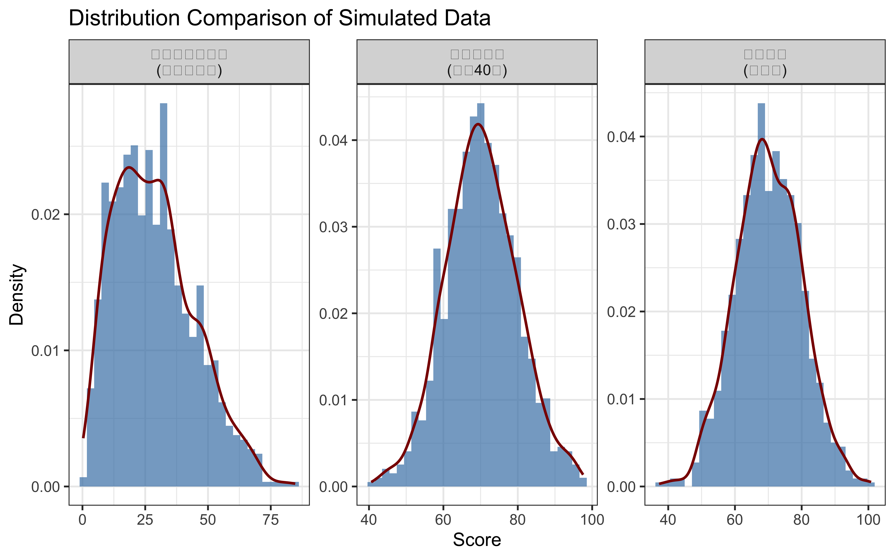
英語教育研究では、TOEFL得点と語彙テスト得点のように変数間に相関があるデータを扱うことが一般的です。MASS::mvrnorm() を使うと、指定した相関構造を持つ多変量正規分布からデータを生成できます。
set.seed(2024)
# 相関行列の定義（TOEFL, 語彙, 読解の3変数）
# TOEFL-語彙: r = 0.70, TOEFL-読解: r = 0.65, 語彙-読解: r = 0.55
cor_matrix <- matrix(
c(1.00, 0.70, 0.65,
0.70, 1.00, 0.55,
0.65, 0.55, 1.00),
nrow = 3,
dimnames = list(
c("TOEFL", "Vocabulary", "Reading"),
c("TOEFL", "Vocabulary", "Reading")
)
)
cat("指定した相関行列:\n")指定した相関行列:print(cor_matrix) TOEFL Vocabulary Reading
TOEFL 1.00 0.70 0.65
Vocabulary 0.70 1.00 0.55
Reading 0.65 0.55 1.00set.seed(2024)
# 相関行列を再定義
cor_matrix <- matrix(
c(1.00, 0.70, 0.65,
0.70, 1.00, 0.55,
0.65, 0.55, 1.00),
nrow = 3
)
# 平均と標準偏差の設定
means <- c(TOEFL = 70, Vocabulary = 65, Reading = 68)
sds <- c(TOEFL = 12, Vocabulary = 10, Reading = 9)
# 共分散行列に変換
# Σ = diag(SD) %*% R %*% diag(SD)
cov_matrix <- diag(sds) %*% cor_matrix %*% diag(sds)
# 多変量正規分布から100名分のデータを生成
sim_scores <- MASS::mvrnorm(n = 100, mu = means, Sigma = cov_matrix)
sim_df <- as.data.frame(sim_scores)
colnames(sim_df) <- c("TOEFL", "Vocabulary", "Reading")
# 実際の相関を確認
cat("生成データの相関行列:\n")生成データの相関行列:cor(sim_df) |> round(2) TOEFL Vocabulary Reading
TOEFL 1.00 0.74 0.71
Vocabulary 0.74 1.00 0.56
Reading 0.71 0.56 1.00# 相関の可視化
GGally::ggpairs(
sim_df,
upper = list(continuous = GGally::wrap("cor", size = 5)),
lower = list(continuous = GGally::wrap("smooth", alpha = 0.4, color = "steelblue")),
diag = list(continuous = GGally::wrap("densityDiag", fill = "steelblue", alpha = 0.5))
) +
labs(title = "Correlation Matrix of Simulated Data") +
theme_bw(base_size = 11)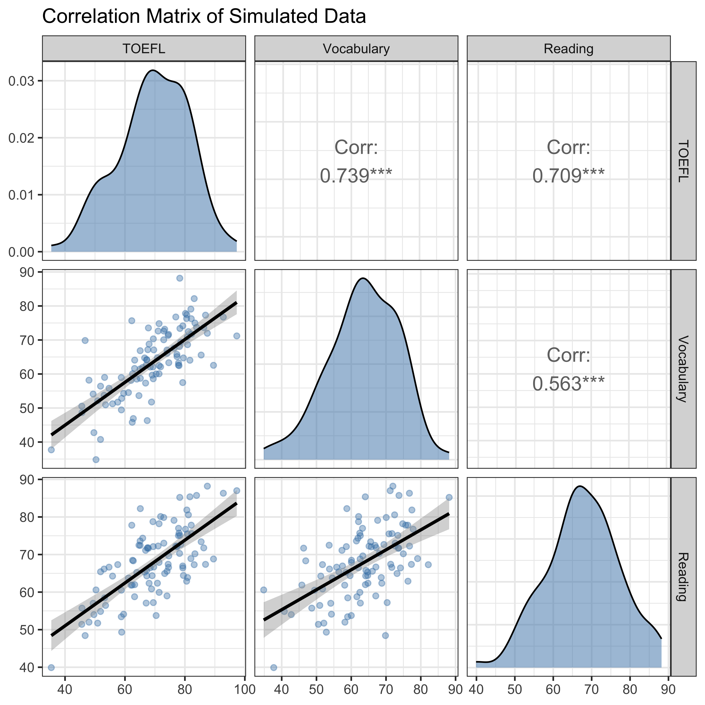
MASS::mvrnorm() は共分散行列 Σ（sigma）を要求しますが、研究計画段階では相関行列 R（rho）で考えるのが自然です。変換式は以下のとおりです:
# 相関行列 R → 共分散行列 Σ
Sigma <- diag(sd_vector) %*% R %*% diag(sd_vector)ここで sd_vector は各変数の標準偏差ベクトルです。各変数の平均と標準偏差は先行研究の値を参考にすると、よりリアルなデータを生成できます。
実験研究のシミュレーションでは、処置群と統制群に意図した差を持たせることが重要です。以下では、明示的指導 vs 暗示的指導の語彙テスト実験をシミュレートします。
set.seed(2024)
n_per_group <- 30
# Cohen's d = 0.5（中程度の効果量）を設定
cohens_d <- 0.5
common_sd <- 5
# 2群のデータを生成
explicit_gain <- rnorm(n_per_group, mean = 8, sd = common_sd)
implicit_gain <- rnorm(n_per_group,
mean = 8 - cohens_d * common_sd, # d * SD だけ低い
sd = common_sd)
# データフレームにまとめる
experiment_df <- data.frame(
participant = paste0("P", 1:(n_per_group * 2)),
instruction = factor(rep(c("Explicit", "Implicit"), each = n_per_group)),
gain_score = c(explicit_gain, implicit_gain)
)
# 確認
experiment_df |>
summarise(
M = mean(gain_score),
SD = sd(gain_score),
.by = instruction
) |>
mutate(across(where(is.numeric), \(x) round(x, 2))) |>
gt::gt() |>
gt::tab_header(title = "群別の得点変化量（gain score）")| 群別の得点変化量（gain score） | ||
| instruction | M | SD |
|---|---|---|
| Explicit | 6.93 | 5.72 |
| Implicit | 5.36 | 4.45 |
# 実際にt検定を実行して効果が検出できるか確認
t_result <- t.test(gain_score ~ instruction, data = experiment_df)
cat("t検定の結果:\n")t検定の結果:cat(sprintf(" t(%0.1f) = %0.3f, p = %0.4f\n",
t_result$parameter, t_result$statistic, t_result$p.value)) t(54.7) = 1.189, p = 0.2394cat(sprintf(" 設定した Cohen's d = %0.1f\n", cohens_d)) 設定した Cohen's d = 0.5cat(sprintf(" 実測 Cohen's d = %0.3f\n",
effectsize::cohens_d(gain_score ~ instruction,
data = experiment_df)$Cohens_d)) 実測 Cohen's d = 0.307Cohen’s d は次のように定義されます:
\[d = \frac{M_1 - M_2}{SD_{pooled}}\]
したがって、d = 0.5、共通SD = 5 と設定した場合、群間差は 0.5 × 5 = 2.5点 になります。先行研究のメタ分析（例: Plonsky & Oswald, 2014）から適切な効果量の目安を得ることで、よりリアルなシミュレーションが設計できます。
| 分野 | 小 | 中 | 大 |
|---|---|---|---|
| L2研究の一般的な基準 | d = 0.40 | d = 0.70 | d = 1.00 |
| Cohenの伝統的基準 | d = 0.20 | d = 0.50 | d = 0.80 |
モンテカルロシミュレーションは、同じ条件でデータ生成と検定を大量に繰り返し、結果の分布を調べる手法です。ここでは、「サンプルサイズと効果量によって、t検定の検出力がどう変わるか」をシミュレーションで確認します。
set.seed(2024)
# シミュレーション関数
simulate_power <- function(n_per_group, cohens_d, n_sim = 1000) {
significant <- 0
for (i in 1:n_sim) {
# 2群のデータを生成
group1 <- rnorm(n_per_group, mean = cohens_d, sd = 1)
group2 <- rnorm(n_per_group, mean = 0, sd = 1)
# t検定（p < .05 なら有意）
p_value <- t.test(group1, group2)$p.value
if (p_value < 0.05) significant <- significant + 1
}
return(significant / n_sim) # 検出力 = 有意になった割合
}
# さまざまな条件の組み合わせ
conditions <- expand.grid(
n = c(10, 20, 30, 50, 80, 100),
d = c(0.2, 0.5, 0.8)
)
# シミュレーション実行（各条件1000回）
conditions$power <- mapply(
simulate_power,
n_per_group = conditions$n,
cohens_d = conditions$d
)
conditions$d_label <- paste0("d = ", conditions$d)conditions |>
mutate(power_pct = paste0(power * 100, "%")) |>
select(n, d_label, power_pct) |>
tidyr::pivot_wider(names_from = d_label, values_from = power_pct) |>
gt::gt() |>
gt::tab_header(
title = "t検定の検出力（シミュレーション結果）",
subtitle = "各条件1,000回のシミュレーション"
) |>
gt::cols_label(n = "1群あたりのn") |>
gt::tab_footnote(
footnote = "検出力 = シミュレーションで有意（p < .05）になった割合",
locations = gt::cells_title("title")
)| t検定の検出力（シミュレーション結果）1 | |||
| 各条件1,000回のシミュレーション | |||
| 1群あたりのn | d = 0.2 | d = 0.5 | d = 0.8 |
|---|---|---|---|
| 10 | 6% | 17.3% | 38.1% |
| 20 | 9% | 31.9% | 67.6% |
| 30 | 10.3% | 48.3% | 85.7% |
| 50 | 16.4% | 69.7% | 96.8% |
| 80 | 23.4% | 88.8% | 100% |
| 100 | 31% | 94.3% | 100% |
| 1 検出力 = シミュレーションで有意（p < .05）になった割合 | |||
ggplot(conditions, aes(x = n, y = power, color = d_label, group = d_label)) +
geom_line(linewidth = 1) +
geom_point(size = 3) +
geom_hline(yintercept = 0.80, linetype = "dashed", color = "gray40") +
annotate("text", x = 95, y = 0.82, label = "Power = 80%",
color = "gray40", size = 3.5) +
scale_y_continuous(labels = scales::percent, limits = c(0, 1)) +
scale_color_brewer(palette = "Set2") +
labs(
title = "Statistical Power by Sample Size and Effect Size",
subtitle = "Monte Carlo Simulation (1,000 iterations per condition)",
x = "Sample Size per Group (n)",
y = "Power (probability of significance)",
color = "Effect Size"
) +
theme_bw(base_size = 12)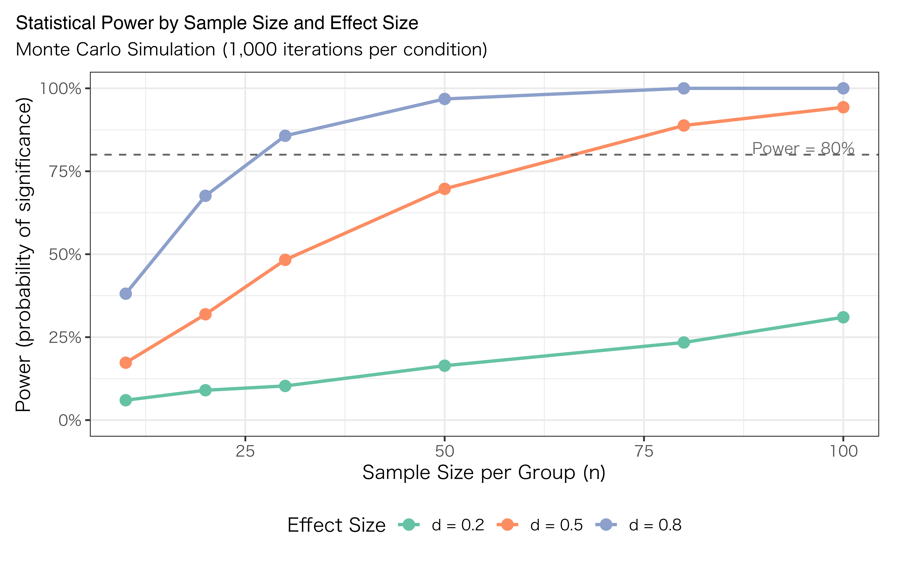
Rには解析的に検出力を計算する power.t.test() 関数もあります。
# 解析的な検出力計算
power.t.test(n = 30, delta = 0.5, sd = 1, sig.level = 0.05, type = "two.sample")解析的手法が使える場合はそちらの方が高速ですが、シミュレーションには以下の利点があります:
「データが正規分布に従わない場合、t検定の結果はどの程度信頼できるか？」——このような疑問にもシミュレーションで答えることができます。
set.seed(2024)
# タイプI過誤率のシミュレーション（帰無仮説が真の場合）
simulate_type1_error <- function(n, distribution = "normal", n_sim = 5000) {
significant <- 0
for (i in 1:n_sim) {
# 同じ分布から2群を生成（真の差 = 0）
if (distribution == "normal") {
g1 <- rnorm(n)
g2 <- rnorm(n)
} else if (distribution == "skewed") {
# 右に歪んだ分布（カイ二乗 df=3）
g1 <- rchisq(n, df = 3) - 3 # 平均を0に
g2 <- rchisq(n, df = 3) - 3
} else if (distribution == "heavy_tail") {
# 裾の重い分布（t分布 df=3）
g1 <- rt(n, df = 3)
g2 <- rt(n, df = 3)
}
p_value <- t.test(g1, g2)$p.value
if (p_value < 0.05) significant <- significant + 1
}
return(significant / n_sim)
}
# 各条件でシミュレーション
type1_results <- expand.grid(
n = c(10, 30, 100),
distribution = c("normal", "skewed", "heavy_tail"),
stringsAsFactors = FALSE
)
type1_results$type1_error <- mapply(
simulate_type1_error,
n = type1_results$n,
distribution = type1_results$distribution
)
type1_results$distribution <- factor(
type1_results$distribution,
levels = c("normal", "skewed", "heavy_tail"),
labels = c("正規分布", "歪んだ分布\n(カイ二乗)", "裾の重い分布\n(t分布)")
)
type1_results |>
mutate(
type1_pct = sprintf("%.1f%%", type1_error * 100),
deviation = sprintf("%+.1f%%", (type1_error - 0.05) * 100)
) |>
select(distribution, n, type1_pct, deviation) |>
gt::gt() |>
gt::tab_header(
title = "分布の形状がタイプI過誤率に与える影響",
subtitle = "帰無仮説が真の場合（各条件5,000回のシミュレーション）"
) |>
gt::cols_label(
distribution = "分布",
n = "サンプルサイズ",
type1_pct = "タイプI過誤率",
deviation = "名目水準(5%)との差"
)| 分布の形状がタイプI過誤率に与える影響 | |||
| 帰無仮説が真の場合（各条件5,000回のシミュレーション） | |||
| 分布 | サンプルサイズ | タイプI過誤率 | 名目水準(5%)との差 |
|---|---|---|---|
| 正規分布 | 10 | 5.2% | +0.2% |
| 正規分布 | 30 | 4.8% | -0.2% |
| 正規分布 | 100 | 5.0% | +0.0% |
| 歪んだ分布 (カイ二乗) | 10 | 4.2% | -0.8% |
| 歪んだ分布 (カイ二乗) | 30 | 4.7% | -0.3% |
| 歪んだ分布 (カイ二乗) | 100 | 5.1% | +0.1% |
| 裾の重い分布 (t分布) | 10 | 3.9% | -1.1% |
| 裾の重い分布 (t分布) | 30 | 4.5% | -0.5% |
| 裾の重い分布 (t分布) | 100 | 5.3% | +0.3% |
上の結果から、以下のことが読み取れます:
このように、「t検定はどの程度頑健か」という問いに対して、シミュレーションによって具体的な数値で答えを得ることができます。
ブートストラップは、手元のデータから復元抽出（同じ観測値を複数回引く可能性がある抽出）を繰り返すことで、統計量の分布を推定するノンパラメトリック手法です。正規性の仮定が不要なため、信頼区間の構築や標準誤差の推定に広く使われています。
set.seed(2024)
# 例: 小さいサンプル（n=15）のTOEFLスコア
toefl_sample <- c(52, 67, 71, 58, 83, 45, 76, 62, 69, 74, 55, 80, 63, 72, 61)
# ブートストラップ信頼区間の計算
n_boot <- 10000
boot_means <- numeric(n_boot)
for (i in 1:n_boot) {
# 復元抽出して平均を計算
boot_sample <- sample(toefl_sample, replace = TRUE)
boot_means[i] <- mean(boot_sample)
}
# 95%信頼区間（パーセンタイル法）
boot_ci <- quantile(boot_means, c(0.025, 0.975))
cat(sprintf("元データの平均: %.2f\n", mean(toefl_sample)))元データの平均: 65.87cat(sprintf("ブートストラップ標準誤差: %.2f\n", sd(boot_means)))ブートストラップ標準誤差: 2.65cat(sprintf("95%%信頼区間: [%.2f, %.2f]\n", boot_ci[1], boot_ci[2]))95%信頼区間: [60.67, 71.00]cat(sprintf("（参考）t分布による95%%CI: [%.2f, %.2f]\n",
t.test(toefl_sample)$conf.int[1],
t.test(toefl_sample)$conf.int[2]))（参考）t分布による95%CI: [59.96, 71.77]# ブートストラップ分布の可視化
boot_df <- data.frame(mean = boot_means)
ggplot(boot_df, aes(x = mean)) +
geom_histogram(aes(y = after_stat(density)),
bins = 50, fill = "steelblue", alpha = 0.7) +
geom_density(color = "darkred", linewidth = 0.8) +
geom_vline(xintercept = mean(toefl_sample),
linetype = "solid", color = "darkblue", linewidth = 1) +
geom_vline(xintercept = boot_ci,
linetype = "dashed", color = "red", linewidth = 0.8) +
annotate("text", x = boot_ci[1] - 1.5, y = 0.01,
label = "2.5%", color = "red", size = 3.5) +
annotate("text", x = boot_ci[2] + 1.5, y = 0.01,
label = "97.5%", color = "red", size = 3.5) +
labs(
title = "Bootstrap Distribution (10,000 Resamples)",
subtitle = sprintf("Original Mean = %.1f, 95%%CI = [%.1f, %.1f]",
mean(toefl_sample), boot_ci[1], boot_ci[2]),
x = "Bootstrap Mean", y = "Density"
) +
theme_bw(base_size = 12)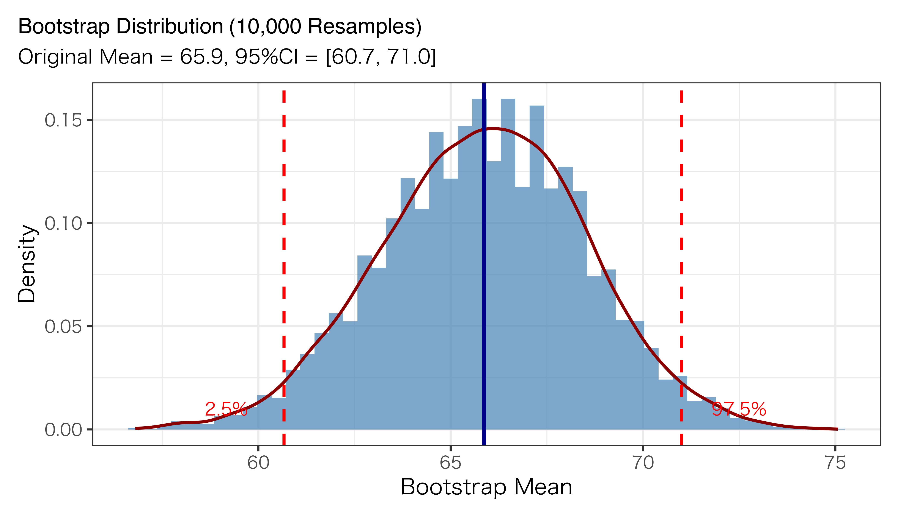
上の例では教育的目的でforループを使いましたが、実務では boot パッケージを使うとより効率的です。
library(boot)
# ブートストラップ関数の定義
boot_mean <- function(data, indices) {
mean(data[indices])
}
# 実行
result <- boot(toefl_sample, boot_mean, R = 10000)
# パーセンタイル法の信頼区間
boot.ci(result, type = "perc")また、{infer} パッケージを使えば、tidyverseスタイルでブートストラップを実行できます。
最後に、英語教育研究でよくある研究デザインをまとめてシミュレートする例を示します。この手法は、研究計画書の作成時や倫理審査の申請時に、予想されるデータのパターンを示すためにも役立ちます。
set.seed(2024)
# =============================================
# 研究シナリオ: 語彙指導法の比較実験
# - 2群（Explicit / Implicit）× 事前事後テスト
# - 3つのCEFRレベル（A2 / B1 / B2）
# - 群 × レベルの交互作用を想定
# =============================================
n_per_cell <- 20 # 各セル（群×レベル）20名
# 実験計画の枠組み
sim_experiment <- expand.grid(
participant = 1:n_per_cell,
instruction = c("Explicit", "Implicit"),
proficiency = c("A2", "B1", "B2")
)
sim_experiment$participant_id <- paste0("S", sprintf("%03d", 1:nrow(sim_experiment)))
# 事前テストスコア（熟達度に応じた基準値）
pretest_means <- c(A2 = 10, B1 = 15, B2 = 20)
sim_experiment$pretest <- rnorm(
nrow(sim_experiment),
mean = pretest_means[sim_experiment$proficiency],
sd = 3
) |> round() |> pmax(0) |> pmin(30)
# 事後テストスコア（指導法 × 熟達度の交互作用を設計）
# Explicit群は全レベルで高い効果、B2では特に顕著
gain_matrix <- matrix(
c(5, 3, # A2: Explicit=5, Implicit=3
6, 3.5, # B1: Explicit=6, Implicit=3.5
8, 4), # B2: Explicit=8, Implicit=4（交互作用）
nrow = 3, byrow = TRUE,
dimnames = list(c("A2", "B1", "B2"), c("Explicit", "Implicit"))
)
cat("設計した群間差（gain score の平均）:\n")設計した群間差（gain score の平均）:print(gain_matrix) Explicit Implicit
A2 5 3.0
B1 6 3.5
B2 8 4.0# 事後テストスコアの生成
sim_experiment$gain <- rnorm(
nrow(sim_experiment),
mean = gain_matrix[cbind(
sim_experiment$proficiency,
sim_experiment$instruction
)],
sd = 2.5
)
sim_experiment$posttest <- round(pmax(pmin(
sim_experiment$pretest + sim_experiment$gain, 30), 0))
# factor型に変換
sim_experiment$instruction <- factor(sim_experiment$instruction)
sim_experiment$proficiency <- factor(sim_experiment$proficiency,
levels = c("A2", "B1", "B2"))# 群別の集計
sim_experiment |>
mutate(gain_score = posttest - pretest) |>
summarise(
n = n(),
Pretest_M = mean(pretest),
Pretest_SD = sd(pretest),
Posttest_M = mean(posttest),
Posttest_SD = sd(posttest),
Gain_M = mean(gain_score),
Gain_SD = sd(gain_score),
.by = c(proficiency, instruction)
) |>
arrange(proficiency, instruction) |>
mutate(across(where(is.numeric) & !n, \(x) round(x, 2))) |>
gt::gt() |>
gt::tab_header(
title = "シミュレーション実験の記述統計量",
subtitle = "指導法 × 熟達度レベル別"
) |>
gt::fmt_number(columns = where(is.numeric), decimals = 2) |>
gt::cols_label(
proficiency = "熟達度",
instruction = "指導法",
n = "n",
Pretest_M = "事前M",
Pretest_SD = "事前SD",
Posttest_M = "事後M",
Posttest_SD = "事後SD",
Gain_M = "Gain M",
Gain_SD = "Gain SD"
)| シミュレーション実験の記述統計量 | ||||||||
| 指導法 × 熟達度レベル別 | ||||||||
| 熟達度 | 指導法 | n | 事前M | 事前SD | 事後M | 事後SD | Gain M | Gain SD |
|---|---|---|---|---|---|---|---|---|
| A2 | Explicit | 20.00 | 9.05 | 3.62 | 13.20 | 3.25 | 4.15 | 1.79 |
| A2 | Implicit | 20.00 | 9.70 | 2.62 | 13.15 | 3.84 | 3.45 | 3.05 |
| B1 | Explicit | 20.00 | 15.05 | 2.96 | 21.80 | 3.96 | 6.75 | 2.10 |
| B1 | Implicit | 20.00 | 15.50 | 3.19 | 19.80 | 3.72 | 4.30 | 2.34 |
| B2 | Explicit | 20.00 | 19.25 | 2.95 | 26.75 | 2.71 | 7.50 | 2.12 |
| B2 | Implicit | 20.00 | 20.25 | 3.29 | 24.50 | 3.28 | 4.25 | 1.55 |
# 交互作用の可視化
sim_experiment |>
mutate(gain_score = posttest - pretest) |>
ggplot(aes(x = proficiency, y = gain_score,
fill = instruction)) +
geom_boxplot(alpha = 0.7, width = 0.6) +
stat_summary(fun = mean, geom = "point",
shape = 18, size = 3,
position = position_dodge(width = 0.6)) +
scale_fill_brewer(palette = "Set2") +
labs(
title = "Gain Score by Instruction Method x Proficiency Level",
subtitle = "Simulated Data (n = 20 per cell)",
x = "CEFR Proficiency", y = "Gain Score (Post - Pre)",
fill = "Method"
) +
theme_bw(base_size = 12)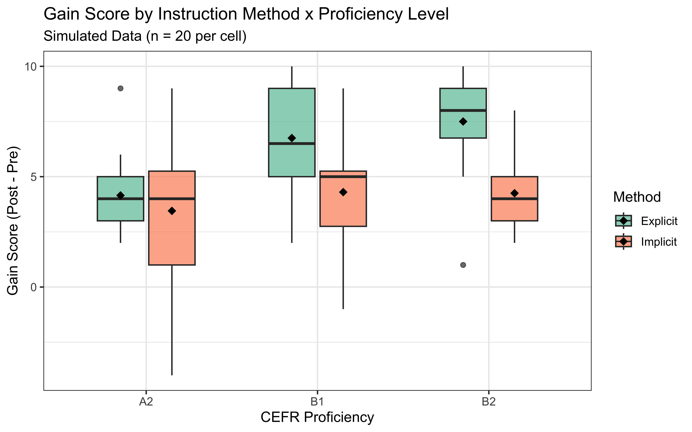
| 場面 | 活用方法 |
|---|---|
| 研究計画書の作成 | 仮想データで分析結果を示し、研究の実現可能性を示す |
| 倫理審査の申請 | 期待されるデータパターンと分析手順を具体的に提示 |
| 分析コードの開発 | 実データ収集前にパイプラインを構築・テスト |
| 検定力分析 | 必要なサンプルサイズを事前に見積もる |
| 統計手法の学習 | 「正解」がわかっている状態で手法の挙動を確認 |
| 前提条件の確認 | 正規性違反等がどの程度結果に影響するかを評価 |
set.seed() の値を明記する#| cache: true を活用するベクトルはRの最も基本的なデータ構造で、同じ型の要素を持つ1次元の配列です。
# 10名のTOEFLスコア
toefl_scores <- c(85, 90, 78, 92, 88, 76, 95, 82, 87, 91)
toefl_scores [1] 85 90 78 92 88 76 95 82 87 91# 参加者ID
participant_ids <- paste0("P", sprintf("%03d", 1:10))
participant_ids [1] "P001" "P002" "P003" "P004" "P005" "P006" "P007" "P008" "P009" "P010"# 連続した数値の生成
1:10 # 1から10 [1] 1 2 3 4 5 6 7 8 9 10seq(0, 120, by = 10) # 0から120まで10刻み（TOEFLスコア範囲） [1] 0 10 20 30 40 50 60 70 80 90 100 110 120rep(c("Explicit", "Implicit"), times = 5) # 条件の繰り返し [1] "Explicit" "Implicit" "Explicit" "Implicit" "Explicit" "Implicit"
[7] "Explicit" "Implicit" "Explicit" "Implicit"# ベクトルの基本的な操作
length(toefl_scores) # 要素数[1] 10mean(toefl_scores) # 平均[1] 86.4sd(toefl_scores) # 標準偏差[1] 6.168018sum(toefl_scores > 85) # 85点より高い人数[1] 6toefl_scores[toefl_scores > 85] # 85点より高いスコアを抽出[1] 90 92 88 95 87 91データフレームは異なる型の列を持てる表形式のデータ構造で、統計解析において最も頻繁に使用します。ここでは本章全体で使用するサンプルデータセットを作成します。
以下のデータセットは、120名の日本人大学EFL学習者を対象とした架空の語彙学習実験です。参加者はCEFR熟達度（A2 / B1 / B2）に分類され、明示的指導（Explicit）または暗示的指導（Implicit）のいずれかを受けた後、語彙テスト（事前・事後）で評価されました。このデータは本章の以降のセクションで一貫して使用します。
# パッケージの読み込み
pacman::p_load(tidyverse, gt, psych, effectsize, GGally, broom)
# テーマの設定
theme_set(theme_bw())
theme_update(legend.position = "bottom")# 再現可能なデータ生成
set.seed(2024)
n <- 120
# 熟達度別の基礎スコアを生成
proficiency_level <- factor(
rep(c("A2", "B1", "B2"), each = 40),
levels = c("A2", "B1", "B2")
)
# 指導法の割り当て（各熟達度内で20名ずつ）
instruction_type <- factor(
rep(rep(c("Explicit", "Implicit"), each = 20), 3)
)
# TOEFL iBTスコア（熟達度に応じた分布）
toefl_base <- c(rnorm(40, 45, 8), rnorm(40, 65, 10), rnorm(40, 85, 7))
toefl_score <- round(pmin(pmax(toefl_base, 0), 120))
# 語彙サイズテスト（TOEFLと相関を持たせる）
vocabulary_test <- round(pmin(pmax(
0.5 * scale(toefl_base)[,1] * 10 +
c(rnorm(40, 50, 7), rnorm(40, 65, 6), rnorm(40, 78, 5)), 0), 100))
# 読解テスト
reading_score <- round(pmin(pmax(
0.4 * scale(toefl_base)[,1] * 10 +
c(rnorm(40, 55, 8), rnorm(40, 68, 7), rnorm(40, 80, 5)), 0), 100))
# ライティング評価
writing_score <- round(pmin(pmax(
0.3 * scale(toefl_base)[,1] * 10 +
c(rnorm(40, 48, 9), rnorm(40, 62, 7), rnorm(40, 75, 6)), 0), 100))
# 事前テスト（0-30点、熟達度に応じた分布）
pretest <- round(pmin(pmax(
c(rnorm(40, 10, 3), rnorm(40, 15, 3), rnorm(40, 20, 3)), 0), 30))
# 事後テスト（事前テスト + 学習効果、Explicit群がやや高いgain）
gain <- ifelse(instruction_type == "Explicit",
rnorm(n, 6, 2),
rnorm(n, 4, 2))
posttest <- round(pmin(pmax(pretest + gain, 0), 30))
# 週あたり自習時間
study_hours <- round(pmin(pmax(rnorm(n, 8, 3), 1), 20), 1)
# データフレームの作成
ele_data <- data.frame(
participant_id = paste0("P", sprintf("%03d", 1:n)),
proficiency_level = proficiency_level,
toefl_score = toefl_score,
vocabulary_test = vocabulary_test,
reading_score = reading_score,
writing_score = writing_score,
instruction_type = instruction_type,
pretest = pretest,
posttest = posttest,
study_hours = study_hours
)# データフレームの構造を確認
str(ele_data)'data.frame': 120 obs. of 10 variables:
$ participant_id : chr "P001" "P002" "P003" "P004" ...
$ proficiency_level: Factor w/ 3 levels "A2","B1","B2": 1 1 1 1 1 1 1 1 1 1 ...
$ toefl_score : num 53 49 44 43 54 55 49 44 35 36 ...
$ vocabulary_test : num 45 44 35 43 42 48 38 37 38 46 ...
$ reading_score : num 54 60 62 60 46 68 47 53 40 50 ...
$ writing_score : num 44 50 38 39 50 42 47 46 49 37 ...
$ instruction_type : Factor w/ 2 levels "Explicit","Implicit": 1 1 1 1 1 1 1 1 1 1 ...
$ pretest : num 11 8 8 12 7 11 9 11 9 13 ...
$ posttest : num 12 17 15 18 13 15 15 13 15 18 ...
$ study_hours : num 3.2 14.5 14.6 2.6 10.9 12.9 11.4 9.5 15.1 5.3 ...# 要約統計量
summary(ele_data) participant_id proficiency_level toefl_score vocabulary_test
Length:120 A2:40 Min. : 19.00 Min. :25.00
Class :character B1:40 1st Qu.: 48.75 1st Qu.:48.00
Mode :character B2:40 Median : 66.50 Median :67.00
Mean : 64.64 Mean :64.98
3rd Qu.: 81.00 3rd Qu.:81.00
Max. :100.00 Max. :92.00
reading_score writing_score instruction_type pretest
Min. :31.00 Min. :30.00 Explicit:60 Min. : 4.00
1st Qu.:55.75 1st Qu.:49.75 Implicit:60 1st Qu.:11.00
Median :70.00 Median :64.50 Median :14.00
Mean :68.15 Mean :62.42 Mean :14.68
3rd Qu.:80.00 3rd Qu.:75.00 3rd Qu.:18.25
Max. :98.00 Max. :89.00 Max. :26.00
posttest study_hours
Min. : 8.00 Min. : 2.200
1st Qu.:16.00 1st Qu.: 6.200
Median :19.00 Median : 8.550
Mean :19.68 Mean : 8.508
3rd Qu.:23.00 3rd Qu.:10.825
Max. :30.00 Max. :15.100 # 先頭6行をgt()で表示
head(ele_data) |>
gt() |>
tab_header(
title = "ELE学習者データ（先頭6行）"
) |>
fmt_number(columns = c(toefl_score, vocabulary_test, reading_score,
writing_score, pretest, posttest), decimals = 0) |>
fmt_number(columns = study_hours, decimals = 1)| ELE学習者データ（先頭6行） | |||||||||
| participant_id | proficiency_level | toefl_score | vocabulary_test | reading_score | writing_score | instruction_type | pretest | posttest | study_hours |
|---|---|---|---|---|---|---|---|---|---|
| P001 | A2 | 53 | 45 | 54 | 44 | Explicit | 11 | 12 | 3.2 |
| P002 | A2 | 49 | 44 | 60 | 50 | Explicit | 8 | 17 | 14.5 |
| P003 | A2 | 44 | 35 | 62 | 38 | Explicit | 8 | 15 | 14.6 |
| P004 | A2 | 43 | 43 | 60 | 39 | Explicit | 12 | 18 | 2.6 |
| P005 | A2 | 54 | 42 | 46 | 50 | Explicit | 7 | 13 | 10.9 |
| P006 | A2 | 55 | 48 | 68 | 42 | Explicit | 11 | 15 | 12.9 |
# TOEFLスコアの分布を熟達度別に確認
ggplot(ele_data, aes(x = proficiency_level, y = toefl_score,
fill = proficiency_level)) +
geom_boxplot(alpha = 0.7) +
geom_jitter(width = 0.2, alpha = 0.3, size = 1.5) +
labs(title = "TOEFL Scores by Proficiency Level",
x = "CEFR Proficiency Level", y = "TOEFL iBT Score") +
theme(legend.position = "none") +
scale_fill_brewer(palette = "Blues")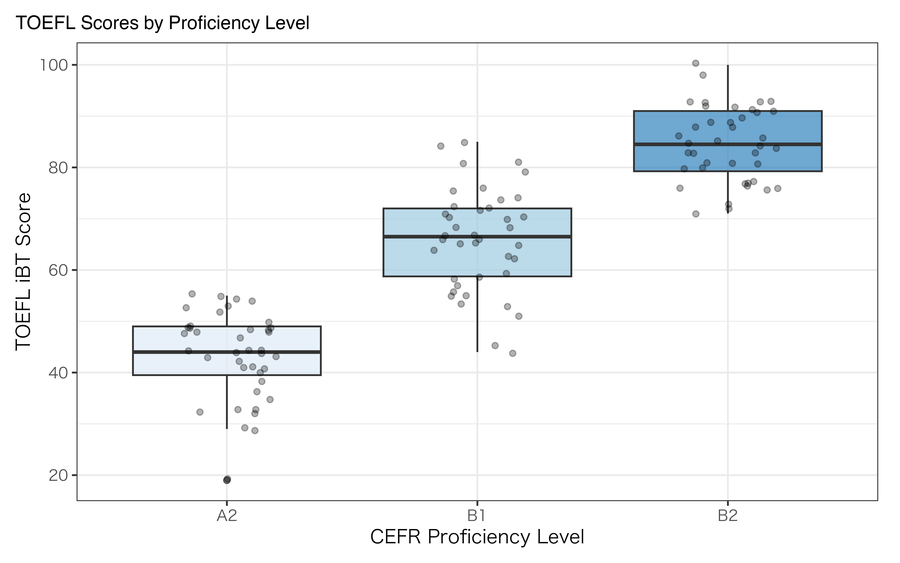
# 列へのアクセス方法（3通り）
ele_data$toefl_score[1:5] # $ 記法[1] 53 49 44 43 54ele_data[1:5, "toefl_score"] # [行, 列名] 記法[1] 53 49 44 43 54ele_data[["toefl_score"]][1:5] # [[]] 記法[1] 53 49 44 43 54# 条件による行の選択
ele_data[ele_data$toefl_score > 90, c("participant_id", "toefl_score", "proficiency_level")] participant_id toefl_score proficiency_level
82 P082 92 B2
83 P083 91 B2
86 P086 93 B2
90 P090 91 B2
100 P100 93 B2
101 P101 100 B2
103 P103 92 B2
108 P108 93 B2
112 P112 93 B2
117 P117 98 B2
120 P120 91 B2tidyverse では data.frame の拡張版である tibble が使われます。tibble はコンソール表示が見やすく、意図しない型変換を防ぎます。as_tibble(ele_data) で変換できます。実用上、両者はほぼ同じように使えます。
リストは異なる型・構造のオブジェクトを格納できるデータ構造です。Rでは統計モデルの結果（lm() の出力等）がリスト形式で返されるため、リストの基本操作を知っておくと便利です。
# 分析結果をリストにまとめる例
study_info <- list(
title = "Vocabulary Learning Experiment",
n_participants = nrow(ele_data),
mean_toefl = mean(ele_data$toefl_score),
proficiency_table = table(ele_data$proficiency_level),
sample_data = head(ele_data, 3)
)
# リスト要素へのアクセス
study_info$title[1] "Vocabulary Learning Experiment"study_info[["n_participants"]][1] 120study_info$proficiency_table
A2 B1 B2
40 40 40 研究データの保存形式として最も一般的なCSV（カンマ区切り）ファイルの操作方法です。Rには Base R の関数（read.csv() / write.csv()）と、readr パッケージの関数（read_csv() / write_csv()）の2系統があります。
# --- readr::read_csv()（推奨）---
library(readr)
data <- read_csv("data/ele_vocabulary_study.csv")
# 特徴:
# - 読み込みが高速（大規模データで顕著）
# - tibble として読み込まれる（コンソール表示が見やすい）
# - 文字列を factor に自動変換しない
# - 列の型を自動推定し、推定結果を表示してくれる
# - 日本語ファイルは locale 指定が必要な場合がある
# --- Base R::read.csv() ---
data <- read.csv("data/ele_vocabulary_study.csv",
header = TRUE,
stringsAsFactors = FALSE)
# 特徴:
# - 追加パッケージ不要（Base Rのみで動作）
# - data.frame として読み込まれる
# - stringsAsFactors = FALSE を指定しないと文字列が factor に変換される
# （R 4.0以降はデフォルトで FALSE だが、明示しておくと安全）
# - 列名のスペースや特殊文字を自動的にドット(.)に変換する本書では read_csv() を推奨しますが、以下の場合は read.csv() が便利です。
read_csv() が意図通りに動作しない場合迷ったら read_csv() を使い、問題が起きたら read.csv() を試す、という方針で十分です。
CSVファイルへの書き出しにも2系統の関数があり、出力結果が微妙に異なります。
# --- readr::write_csv()（推奨）---
write_csv(ele_data, "output/results.csv")
# 特徴:
# - 行番号を出力しない（デフォルト）
# - UTF-8 エンコーディングで書き出す
# - 書き出し速度が速い
# - BOM（Byte Order Mark）なしで書き出す → Excelで開くと文字化けする場合がある
# --- write_csv() で Excel 対応する場合 ---
# BOM 付き UTF-8 で書き出す（Excelで日本語が正しく表示される）
write_excel_csv(ele_data, "output/results_for_excel.csv")
# --- Base R::write.csv() ---
write.csv(ele_data, "output/results.csv", row.names = FALSE)
# 特徴:
# - row.names = FALSE を指定しないと行番号が余分な列として出力される（重要！）
# - fileEncoding 引数でエンコーディングを指定できる
# - quote = TRUE がデフォルト（文字列が引用符で囲まれる）write.csv() は デフォルトで行番号を出力します。これを忘れると、再度読み込んだ際に不要な X という列が追加されてしまいます。必ず row.names = FALSE を指定してください。
# 悪い例（行番号が出力される）
write.csv(ele_data, "output.csv")
# → 再読み込みすると "X" という不要な列ができる
# 良い例
write.csv(ele_data, "output.csv", row.names = FALSE)
# さらに良い例（write_csv は row.names の問題がそもそも起きない）
write_csv(ele_data, "output.csv")日本語を含むCSVファイル（特にExcelで作成されたもの）は Shift-JIS エンコーディングで保存されていることが多く、そのまま read_csv() で読み込むと文字化けします。以下のようにエンコーディングを指定してください。
# 読み込み時: Shift-JIS → UTF-8
data <- read_csv("data.csv", locale = locale(encoding = "Shift-JIS"))
# 書き出し時: 共同研究者がExcelで開く場合
write_excel_csv(data, "output.csv") # BOM付きUTF-8（Excel対応）tibble::tribble(
~関数, ~引数, ~デフォルト, ~説明,
"read.csv()", "header", "TRUE", "1行目を列名として扱うか",
"read.csv()", "sep", '","', "区切り文字（TSVなら sep = \"\\t\"）",
"read.csv()", "stringsAsFactors", "FALSE", "文字列をfactorに変換するか（R 4.0+）",
"read.csv()", "na.strings", '"NA"', "NAとして扱う文字列",
"read.csv()", "fileEncoding", '""', "ファイルのエンコーディング",
"read.csv()", "skip", "0", "先頭から読み飛ばす行数",
"read.csv()", "nrows", "-1", "読み込む最大行数（-1 = 全行）",
"write.csv()", "row.names", "TRUE", "行番号を出力するか（FALSEを推奨）",
"write.csv()", "quote", "TRUE", "文字列を引用符で囲むか",
"write.csv()", "fileEncoding", '""', "出力ファイルのエンコーディング",
"read_csv()", "col_types", "NULL", "列の型を明示的に指定（cols()で指定）",
"read_csv()", "locale", "default", "エンコーディング・小数点等のロケール設定",
"read_csv()", "skip", "0", "先頭から読み飛ばす行数",
"read_csv()", "n_max", "Inf", "読み込む最大行数",
"read_csv()", "name_repair", '"unique"', "列名の重複をどう処理するか"
) |>
gt() |>
tab_header(title = "CSVファイル操作関数の主要引数") |>
cols_label(
関数 = "関数", 引数 = "引数",
デフォルト = "デフォルト値", 説明 = "説明"
) |>
tab_row_group(label = "readr（推奨）", rows = 11:15) |>
tab_row_group(label = "Base R: write.csv()", rows = 8:10) |>
tab_row_group(label = "Base R: read.csv()", rows = 1:7)| CSVファイル操作関数の主要引数 | |||
| 関数 | 引数 | デフォルト値 | 説明 |
|---|---|---|---|
| Base R: read.csv() | |||
| read.csv() | header | TRUE | 1行目を列名として扱うか |
| read.csv() | sep | "," | 区切り文字（TSVなら sep = "\t"） |
| read.csv() | stringsAsFactors | FALSE | 文字列をfactorに変換するか（R 4.0+） |
| read.csv() | na.strings | "NA" | NAとして扱う文字列 |
| read.csv() | fileEncoding | "" | ファイルのエンコーディング |
| read.csv() | skip | 0 | 先頭から読み飛ばす行数 |
| read.csv() | nrows | -1 | 読み込む最大行数（-1 = 全行） |
| Base R: write.csv() | |||
| write.csv() | row.names | TRUE | 行番号を出力するか（FALSEを推奨） |
| write.csv() | quote | TRUE | 文字列を引用符で囲むか |
| write.csv() | fileEncoding | "" | 出力ファイルのエンコーディング |
| readr（推奨） | |||
| read_csv() | col_types | NULL | 列の型を明示的に指定（cols()で指定） |
| read_csv() | locale | default | エンコーディング・小数点等のロケール設定 |
| read_csv() | skip | 0 | 先頭から読み飛ばす行数 |
| read_csv() | n_max | Inf | 読み込む最大行数 |
| read_csv() | name_repair | "unique" | 列名の重複をどう処理するか |
# readxlパッケージ（読み込み専用）
# install.packages("readxl")
library(readxl)
data <- read_excel("data/questionnaire_results.xlsx", sheet = 1)
# 書き出しにはopenxlsxを使用
# install.packages("openxlsx")
library(openxlsx)
write.xlsx(data, "output/results.xlsx")研究では、参加者ごと・セッションごとにCSVファイルが分かれている場合があります。purrr::map() と list.files() を組み合わせることで、フォルダ内の全CSVを一括で読み込み、1つのデータフレームに結合できます。
# data/sessions/ フォルダ内の全CSVファイルを一括読み込み
csv_files <- list.files("data/sessions/", pattern = "\\.csv$", full.names = TRUE)
csv_files # ファイルパスの一覧を確認
# map_dfr() で全ファイルを読み込み、行方向に結合
all_data <- csv_files |>
purrr::map_dfr(read_csv, .id = "file_id")
# ファイル名から条件情報を抽出する例
# 例: "data/sessions/participant_001_pretest.csv" → participant_id と timepoint
all_data <- csv_files |>
purrr::map_dfr(~ {
df <- read_csv(.x)
df$source_file <- basename(.x) # ファイル名を列として追加
df
})ファイル数が多い場合は、読み込み前に csv_files の中身を print() で確認し、意図しないファイルが混入していないかチェックしましょう。また、各ファイルの列名・列数が統一されていることを事前に確認してください。列構造が異なる場合は map_dfr() の代わりに map() でリストとして読み込み、個別に確認してから bind_rows() で結合します。
分析の途中経過を保存する際に便利な形式です。データ型や因子の水準順序がそのまま保持されます。
# 単一オブジェクトの保存
saveRDS(ele_data, "data/ele_data.rds")
# 読み込み
ele_data <- readRDS("data/ele_data.rds")
# 複数オブジェクトの一括保存（RData形式）
save(ele_data, study_info, file = "data/analysis_workspace.RData")
load("data/analysis_workspace.RData")# SPSSファイル（.sav）の読み込み
# 英語教育研究では共同研究者がSPSSを使用している場合があります
library(haven)
data <- read_sav("data/spss_data.sav")
# Googleスプレッドシートの読み込み
library(googlesheets4)
data <- read_sheet("https://docs.google.com/spreadsheets/d/xxxx")setwd() でディレクトリを変更するのではなく、RStudioプロジェクト（第10節参照）を使用し、here::here() で相対パスを構築することを推奨します。
# 非推奨
setwd("C:/Users/username/Documents/research")
data <- read_csv("data.csv")
# 推奨
library(here)
data <- read_csv(here("data", "ele_vocabulary_study.csv"))tidyverse は、データの読み込み・整形・可視化・モデリングを一貫した文法で行うためのパッケージ群です。本書のすべての章で使用しており、Rでのデータ分析における事実上の標準となっています。
パイプ演算子は、関数の出力を次の関数の入力として渡す記法です。データ分析では複数の操作を連鎖的に行うことが多いため、パイプを使いこなすことでコードの可読性と保守性が大幅に向上します。
まずパイプを使わない場合と使う場合を比較してみましょう。
# 方法1: 入れ子にする（内側から外側に読む必要があり、読みにくい）
round(mean(ele_data$toefl_score, na.rm = TRUE), 2)[1] 64.64# 方法2: 中間変数をたくさん作る（変数名を考える手間がかかる）
tmp1 <- ele_data$toefl_score
tmp2 <- mean(tmp1, na.rm = TRUE)
tmp3 <- round(tmp2, 2)
tmp3[1] 64.64# 方法3: パイプを使う（左から右に自然に読める）
ele_data$toefl_score |> mean(na.rm = TRUE) |> round(2)[1] 64.64パイプは x |> f(y) を f(x, y) と解釈します。つまり、左辺の結果を右辺の関数の第1引数に渡します。
|> とmagrittrパイプ %>%Rには2種類のパイプ演算子があります。
# ネイティブパイプ |>（R 4.1以降）
ele_data$toefl_score |> mean() |> round(2)[1] 64.64# magrittrパイプ %>%（tidyverseに含まれる）
ele_data$toefl_score %>% mean() %>% round(2)[1] 64.64# 基本的な用途では同じ結果を返す|> と %>% の詳細な違い
ネイティブパイプ \|> |
magrittrパイプ %>% |
|
|---|---|---|
| 導入時期 | R 4.1（2021年5月） | 2014年（magrittrパッケージ） |
| パッケージ依存 | なし（R本体に組み込み） | magrittr（tidyverseで自動読み込み） |
| 速度 | やや速い | やや遅い（ごく僅かな差） |
| プレースホルダ | _（R 4.2以降、名前付き引数のみ） |
.（自由度が高い） |
| 無名関数 | \(x) ... 形式を使用 |
{ } 内で . を使用可能 |
| RStudioショートカット | Ctrl + Shift + M / Cmd + Shift + M |
同左（設定で切替可能） |
| 本書での採用 | ✅ | — |
日常的な dplyr 操作（select(), filter(), mutate() 等）では両者の違いを意識する必要はほとんどありません。本書では R 本体に組み込まれたネイティブパイプ |> を使用しますが、Stack Overflow や他の教材で %>% を見かけた場合もそのまま読み替えて構いません。
パイプは通常、左辺の結果を右辺の 第1引数 に渡します。しかし、第2引数以降に渡したい場合はプレースホルダを使います。
# --- ネイティブパイプ |> のプレースホルダ: _ ---
# R 4.2以降、名前付き引数でのみ使用可能
# lm() の data 引数（第2引数）にデータを渡す
ele_data |>
filter(proficiency_level == "B2") |>
lm(toefl_score ~ vocabulary_test, data = _) |>
summary()
Call:
lm(formula = toefl_score ~ vocabulary_test, data = filter(ele_data,
proficiency_level == "B2"))
Residuals:
Min 1Q Median 3Q Max
-12.7736 -4.7123 -0.8037 4.9972 15.1245
Coefficients:
Estimate Std. Error t value Pr(>|t|)
(Intercept) 38.5977 23.0183 1.677 0.1018
vocabulary_test 0.5509 0.2753 2.001 0.0526 .
---
Signif. codes: 0 '***' 0.001 '**' 0.01 '*' 0.05 '.' 0.1 ' ' 1
Residual standard error: 7.009 on 38 degrees of freedom
Multiple R-squared: 0.09531, Adjusted R-squared: 0.0715
F-statistic: 4.003 on 1 and 38 DF, p-value: 0.05259# --- magrittr %>% のプレースホルダ: . ---
# 位置を問わず使用可能（より柔軟）
# 同じ操作を %>% で書く場合
# ele_data %>%
# filter(proficiency_level == "B2") %>%
# lm(toefl_score ~ vocabulary_test, data = .) %>%
# summary()ネイティブパイプ |> の _ は名前付き引数でのみ使用できます。以下のようなケースではエラーになります。
# エラーになる例（位置引数に _ は使えない）
# c(1, 2, 3) |> paste(_, "点") # Error
# 対処法: 無名関数を使う
c(1, 2, 3) |> (\(x) paste(x, "点"))()
# magrittr なら . で直接書ける
# c(1, 2, 3) %>% paste(., "点") # OKこの制約があるため、プレースホルダを多用する場面では %>% の方が簡潔に書けることがあります。ただし、日常的な dplyr 操作ではプレースホルダ自体をほとんど使わないため、大きな問題にはなりません。
パイプで複数の操作をつなぐ際の改行ルールを確認します。
# 推奨: パイプの後で改行（|> を行末に置く）
result <- ele_data |>
filter(proficiency_level == "B2") |>
mutate(gain = posttest - pretest) |>
group_by(instruction_type) |>
summarize(mean_gain = mean(gain), .groups = "drop")
result# A tibble: 2 × 2
instruction_type mean_gain
<fct> <dbl>
1 Explicit 6.2
2 Implicit 3.45# 非推奨: パイプを行頭に置く（動作するが、スタイルガイドに反する）
# result <- ele_data
# |> filter(proficiency_level == "B2") # エラーになる場合があるネイティブパイプ |> を行頭に置くと、Rは前の行で式が完結したと解釈してエラーになることがあります。パイプ演算子は必ず行末に配置してください。
# エラーになりうる書き方
ele_data
|> filter(toefl_score > 80) # Rは ele_data で式が終わったと判断
# 正しい書き方
ele_data |>
filter(toefl_score > 80) # |> が行末にあるので次の行に続く長いパイプチェーンでエラーが出た場合、途中の段階で結果を確認する方法を紹介します。
# 方法1: パイプの途中で切って実行する
# → 確認したい位置までを選択して Ctrl+Enter で実行
ele_data |>
filter(proficiency_level == "B2") |>
mutate(gain = posttest - pretest) participant_id proficiency_level toefl_score vocabulary_test reading_score
1 P081 B2 76 81 77
2 P082 B2 92 88 87
3 P083 B2 91 81 88
4 P084 B2 73 81 78
5 P085 B2 86 89 98
6 P086 B2 93 80 85
7 P087 B2 84 79 79
8 P088 B2 83 84 87
9 P089 B2 83 87 74
10 P090 B2 91 87 84
11 P091 B2 76 78 83
12 P092 B2 81 85 80
13 P093 B2 80 79 90
14 P094 B2 90 71 83
15 P095 B2 89 88 91
16 P096 B2 71 82 74
17 P097 B2 77 85 89
18 P098 B2 77 84 72
19 P099 B2 85 80 84
20 P100 B2 93 91 88
21 P101 B2 100 84 84
22 P102 B2 88 92 77
23 P103 B2 92 86 87
24 P104 B2 86 83 85
25 P105 B2 76 81 86
26 P106 B2 88 85 92
27 P107 B2 84 83 78
28 P108 B2 93 88 88
29 P109 B2 81 81 78
30 P110 B2 77 84 89
31 P111 B2 76 88 80
32 P112 B2 93 89 90
33 P113 B2 80 81 87
34 P114 B2 85 81 80
35 P115 B2 81 82 73
36 P116 B2 72 80 79
37 P117 B2 98 87 91
38 P118 B2 89 82 89
39 P119 B2 83 83 90
40 P120 B2 91 80 80
writing_score instruction_type pretest posttest study_hours gain
1 73 Explicit 24 30 8.6 6
2 89 Explicit 26 30 9.8 4
3 78 Explicit 18 25 11.0 7
4 74 Explicit 20 30 8.2 10
5 82 Explicit 15 22 6.5 7
6 77 Explicit 21 27 6.9 6
7 71 Explicit 20 27 3.0 7
8 75 Explicit 22 28 10.5 6
9 79 Explicit 21 26 10.9 5
10 77 Explicit 14 18 12.6 4
11 70 Explicit 17 22 6.0 5
12 83 Explicit 17 22 11.3 5
13 72 Explicit 22 30 4.2 8
14 65 Explicit 16 24 10.6 8
15 83 Explicit 22 30 14.5 8
16 82 Explicit 25 29 8.6 4
17 80 Explicit 18 23 12.1 5
18 81 Explicit 19 28 8.5 9
19 71 Explicit 23 30 5.5 7
20 87 Explicit 16 19 5.9 3
21 85 Implicit 16 18 5.4 2
22 83 Implicit 22 25 11.8 3
23 83 Implicit 14 18 5.3 4
24 85 Implicit 17 22 6.9 5
25 67 Implicit 22 25 9.1 3
26 78 Implicit 21 27 11.7 6
27 79 Implicit 20 23 7.9 3
28 87 Implicit 17 21 9.2 4
29 89 Implicit 25 27 5.1 2
30 73 Implicit 24 26 9.8 2
31 81 Implicit 20 24 13.0 4
32 78 Implicit 16 17 12.4 1
33 76 Implicit 16 20 2.2 4
34 78 Implicit 21 27 9.8 6
35 76 Implicit 19 21 5.8 2
36 76 Implicit 19 24 3.3 5
37 80 Implicit 19 22 9.1 3
38 74 Implicit 24 25 7.5 1
39 75 Implicit 22 29 8.2 7
40 83 Implicit 19 21 10.9 2 # ここまで選択して実行し、中間結果を確認
# 方法2: 途中に print() や glimpse() を挟む（パイプの流れは止まらない）
# ele_data |>
# filter(proficiency_level == "B2") |>
# print() |> # ← ここで中間結果が表示される（データはそのまま次に渡る）
# mutate(gain = posttest - pretest)
# 方法3: 段階ごとに中間変数に代入する
step1 <- ele_data |> filter(proficiency_level == "B2")
step2 <- step1 |> mutate(gain = posttest - pretest)
step3 <- step2 |> group_by(instruction_type) |>
summarize(mean_gain = mean(gain), .groups = "drop")
step3# A tibble: 2 × 2
instruction_type mean_gain
<fct> <dbl>
1 Explicit 6.2
2 Implicit 3.45RStudio の Tools → Global Options → Code → Use native pipe operator にチェックを入れると、ショートカット Ctrl + Shift + M（Mac: Cmd + Shift + M）で入力されるパイプが %>% から |> に切り替わります。本書のコードに合わせて |> に設定しておくことを推奨します。
select() はデータフレームから必要な列だけを取り出す関数です。列数の多いデータを扱う際に頻繁に使用します。
select() は dplyr 以外のパッケージ（特に MASS）にも同名の関数が存在します。MASS パッケージを読み込んだ後に select() を使うと、意図しない動作やエラーが発生することがあります。
# エラーの例（MASSを読み込んだ後に発生しうる）
# Error in select(., participant_id, toefl_score) :
# unused arguments (participant_id, toefl_score)
# 対処法 1: 明示的に名前空間を指定する（最も確実）
ele_data |> dplyr::select(participant_id, toefl_score)
# 対処法 2: conflicted パッケージで優先順位を明示する
# library(conflicted)
# conflict_prefer("select", "dplyr")
# conflict_prefer("filter", "dplyr")混合効果モデル（lme4）を使う章では MASS が間接的に読み込まれることが多いため、本書の他の章を参照する際は特に注意してください。エラーが出た場合は、まず dplyr::select() と明示的に書き直してみてください。
# 列名を直接指定
ele_data |>
select(participant_id, toefl_score, proficiency_level) |>
head(5) participant_id toefl_score proficiency_level
1 P001 53 A2
2 P002 49 A2
3 P003 44 A2
4 P004 43 A2
5 P005 54 A2# 列の除外（- で指定）
ele_data |>
select(-study_hours, -participant_id) |>
head(5) proficiency_level toefl_score vocabulary_test reading_score writing_score
1 A2 53 45 54 44
2 A2 49 44 60 50
3 A2 44 35 62 38
4 A2 43 43 60 39
5 A2 54 42 46 50
instruction_type pretest posttest
1 Explicit 11 12
2 Explicit 8 17
3 Explicit 8 15
4 Explicit 12 18
5 Explicit 7 13# 列の順序を変更（指定した列が先頭に来る）
ele_data |>
select(proficiency_level, instruction_type, everything()) |>
head(3) proficiency_level instruction_type participant_id toefl_score vocabulary_test
1 A2 Explicit P001 53 45
2 A2 Explicit P002 49 44
3 A2 Explicit P003 44 35
reading_score writing_score pretest posttest study_hours
1 54 44 11 12 3.2
2 60 50 8 17 14.5
3 62 38 8 15 14.6列名のパターンに基づいて柔軟に列を選択できます。列数が多いデータセットで特に便利です。
# ends_with(): 末尾が一致する列
ele_data |>
select(participant_id, ends_with("score")) |>
head(3) participant_id toefl_score reading_score writing_score
1 P001 53 54 44
2 P002 49 60 50
3 P003 44 62 38# starts_with(): 先頭が一致する列
ele_data |>
select(starts_with("toefl"), starts_with("vocab")) |>
head(3) toefl_score vocabulary_test
1 53 45
2 49 44
3 44 35# contains(): 部分一致する列
ele_data |>
select(participant_id, contains("test")) |>
head(3) participant_id vocabulary_test pretest posttest
1 P001 45 11 12
2 P002 44 8 17
3 P003 35 8 15# matches(): 正規表現による一致
ele_data |>
select(participant_id, matches("pre|post")) |>
head(3) participant_id pretest posttest
1 P001 11 12
2 P002 8 17
3 P003 8 15# where(): 条件を満たす列（例: 数値列のみ）
ele_data |>
select(where(is.numeric)) |>
head(3) toefl_score vocabulary_test reading_score writing_score pretest posttest
1 53 45 54 44 11 12
2 49 44 60 50 8 17
3 44 35 62 38 8 15
study_hours
1 3.2
2 14.5
3 14.6# 列番号による選択（非推奨だが、知っておくと便利な場面がある）
ele_data |>
select(1:3) |>
head(3) participant_id proficiency_level toefl_score
1 P001 A2 53
2 P002 A2 49
3 P003 A2 44| ヘルパー関数 | 用途 | 例 |
|---|---|---|
starts_with("x") |
先頭一致 | starts_with("toefl") |
ends_with("x") |
末尾一致 | ends_with("score") |
contains("x") |
部分一致 | contains("test") |
matches("regex") |
正規表現 | matches("pre\|post") |
where(fn) |
条件判定 | where(is.numeric) |
all_of(vars) |
変数名ベクトル（全一致必須） | all_of(c("a", "b")) |
any_of(vars) |
変数名ベクトル（部分一致OK） | any_of(c("a", "b", "c")) |
everything() |
残りの全列 | 列の並び替えに使用 |
last_col() |
最後の列 | select(1:last_col(3)) |
変数名を文字列ベクトルで指定する場合は all_of() または any_of() を使います。分析をループで回す場合や、関数化する際に重要です。
# 選択したい列名をベクトルで定義
score_vars <- c("toefl_score", "vocabulary_test", "reading_score")
# all_of(): ベクトル内の列がすべて存在しなければエラー
ele_data |>
select(participant_id, all_of(score_vars)) |>
head(3) participant_id toefl_score vocabulary_test reading_score
1 P001 53 45 54
2 P002 49 44 60
3 P003 44 35 62# any_of(): 存在する列だけ選択（存在しない列は無視）
flexible_vars <- c("toefl_score", "ielts_score", "reading_score") # ielts_scoreは存在しない
ele_data |>
select(participant_id, any_of(flexible_vars)) |>
head(3) participant_id toefl_score reading_score
1 P001 53 54
2 P002 49 60
3 P003 44 62# 数値列の列名をすべて大文字に変換
ele_data |>
rename_with(toupper, where(is.numeric)) |>
head(3) participant_id proficiency_level TOEFL_SCORE VOCABULARY_TEST READING_SCORE
1 P001 A2 53 45 54
2 P002 A2 49 44 60
3 P003 A2 44 35 62
WRITING_SCORE instruction_type PRETEST POSTTEST STUDY_HOURS
1 44 Explicit 11 12 3.2
2 50 Explicit 8 17 14.5
3 38 Explicit 8 15 14.6# 特定のパターンを置換
ele_data |>
rename_with(~ str_replace(.x, "_score", ""), ends_with("score")) |>
head(3) participant_id proficiency_level toefl vocabulary_test reading writing
1 P001 A2 53 45 54 44
2 P002 A2 49 44 60 50
3 P003 A2 44 35 62 38
instruction_type pretest posttest study_hours
1 Explicit 11 12 3.2
2 Explicit 8 17 14.5
3 Explicit 8 15 14.6filter() は条件に合致する行だけを抽出する関数です。
stats::filter()（時系列フィルタリング用の関数）と dplyr::filter() は同名です。tidyverse を読み込んでいれば通常は dplyr::filter() が優先されますが、パッケージの読み込み順序によっては衝突が起こります。エラーが出た場合は dplyr::filter() と明示してください。
# 単一条件
ele_data |>
filter(proficiency_level == "B2") |>
head(5) participant_id proficiency_level toefl_score vocabulary_test reading_score
1 P081 B2 76 81 77
2 P082 B2 92 88 87
3 P083 B2 91 81 88
4 P084 B2 73 81 78
5 P085 B2 86 89 98
writing_score instruction_type pretest posttest study_hours
1 73 Explicit 24 30 8.6
2 89 Explicit 26 30 9.8
3 78 Explicit 18 25 11.0
4 74 Explicit 20 30 8.2
5 82 Explicit 15 22 6.5# 複数条件（AND：カンマ区切り = & と同じ）
ele_data |>
filter(proficiency_level == "B2", toefl_score > 85) participant_id proficiency_level toefl_score vocabulary_test reading_score
1 P082 B2 92 88 87
2 P083 B2 91 81 88
3 P085 B2 86 89 98
4 P086 B2 93 80 85
5 P090 B2 91 87 84
6 P094 B2 90 71 83
7 P095 B2 89 88 91
8 P100 B2 93 91 88
9 P101 B2 100 84 84
10 P102 B2 88 92 77
11 P103 B2 92 86 87
12 P104 B2 86 83 85
13 P106 B2 88 85 92
14 P108 B2 93 88 88
15 P112 B2 93 89 90
16 P117 B2 98 87 91
17 P118 B2 89 82 89
18 P120 B2 91 80 80
writing_score instruction_type pretest posttest study_hours
1 89 Explicit 26 30 9.8
2 78 Explicit 18 25 11.0
3 82 Explicit 15 22 6.5
4 77 Explicit 21 27 6.9
5 77 Explicit 14 18 12.6
6 65 Explicit 16 24 10.6
7 83 Explicit 22 30 14.5
8 87 Explicit 16 19 5.9
9 85 Implicit 16 18 5.4
10 83 Implicit 22 25 11.8
11 83 Implicit 14 18 5.3
12 85 Implicit 17 22 6.9
13 78 Implicit 21 27 11.7
14 87 Implicit 17 21 9.2
15 78 Implicit 16 17 12.4
16 80 Implicit 19 22 9.1
17 74 Implicit 24 25 7.5
18 83 Implicit 19 21 10.9# 複数条件（OR）
ele_data |>
filter(proficiency_level %in% c("B1", "B2")) |>
head(5) participant_id proficiency_level toefl_score vocabulary_test reading_score
1 P041 B1 56 73 71
2 P042 B1 65 65 70
3 P043 B1 70 66 79
4 P044 B1 85 80 74
5 P045 B1 53 60 70
writing_score instruction_type pretest posttest study_hours
1 75 Explicit 13 17 10.4
2 68 Explicit 14 19 2.2
3 64 Explicit 13 20 6.8
4 59 Explicit 9 17 8.7
5 67 Explicit 14 20 10.0# 文字列の部分一致（str_detect）
ele_data |>
filter(str_detect(participant_id, "^P00")) |> # P00で始まるID
head(5) participant_id proficiency_level toefl_score vocabulary_test reading_score
1 P001 A2 53 45 54
2 P002 A2 49 44 60
3 P003 A2 44 35 62
4 P004 A2 43 43 60
5 P005 A2 54 42 46
writing_score instruction_type pretest posttest study_hours
1 44 Explicit 11 12 3.2
2 50 Explicit 8 17 14.5
3 38 Explicit 8 15 14.6
4 39 Explicit 12 18 2.6
5 50 Explicit 7 13 10.9# NAの除外
# filter(data, !is.na(column)) # 特定列のNAを除外
# drop_na(column) # 同上（tidyr関数）
# 範囲内の値（between）
ele_data |>
filter(between(toefl_score, 60, 80)) |>
head(5) participant_id proficiency_level toefl_score vocabulary_test reading_score
1 P042 B1 65 65 70
2 P043 B1 70 66 79
3 P046 B1 66 62 66
4 P047 B1 68 67 63
5 P048 B1 72 57 70
writing_score instruction_type pretest posttest study_hours
1 68 Explicit 14 19 2.2
2 64 Explicit 13 20 6.8
3 48 Explicit 20 23 9.7
4 64 Explicit 12 16 9.4
5 62 Explicit 17 27 12.3# 否定条件（!）
ele_data |>
filter(proficiency_level != "A2", instruction_type != "Implicit") |>
head(5) participant_id proficiency_level toefl_score vocabulary_test reading_score
1 P041 B1 56 73 71
2 P042 B1 65 65 70
3 P043 B1 70 66 79
4 P044 B1 85 80 74
5 P045 B1 53 60 70
writing_score instruction_type pretest posttest study_hours
1 75 Explicit 13 17 10.4
2 68 Explicit 14 19 2.2
3 64 Explicit 13 20 6.8
4 59 Explicit 9 17 8.7
5 67 Explicit 14 20 10.0# 複雑な条件の組み合わせ
ele_data |>
filter(
(proficiency_level == "B2" & toefl_score > 80) |
(proficiency_level == "A2" & toefl_score > 50)
) |>
nrow()[1] 35= と == の混同: filter(x = 5) はエラーになります。等値比較には == を使います。| と %in% の混同: filter(x == "A" | x == "B" | x == "C") は filter(x %in% c("A", "B", "C")) と書いた方が簡潔です。filter(x > 5) は NA の行を自動的に除外します。NAを残したい場合は filter(x > 5 | is.na(x)) とします。== で比較できますが、levels() で定義されていない値との比較は常に FALSE を返します。filter() が条件に基づく抽出であるのに対し、slice 系関数は位置やランクに基づいて行を選択します。
# 特定の行番号を選択
ele_data |>
slice(1, 5, 10) participant_id proficiency_level toefl_score vocabulary_test reading_score
1 P001 A2 53 45 54
2 P005 A2 54 42 46
3 P010 A2 36 46 50
writing_score instruction_type pretest posttest study_hours
1 44 Explicit 11 12 3.2
2 50 Explicit 7 13 10.9
3 37 Explicit 13 18 5.3# ランダムに5行抽出（set.seedで再現可能）
set.seed(2024)
ele_data |>
slice_sample(n = 5) participant_id proficiency_level toefl_score vocabulary_test reading_score
1 P066 B1 64 69 71
2 P037 A2 48 48 46
3 P045 B1 53 60 70
4 P060 B1 65 63 69
5 P017 A2 38 34 50
writing_score instruction_type pretest posttest study_hours
1 60 Implicit 20 22 8.0
2 42 Implicit 8 12 6.2
3 67 Explicit 14 20 10.0
4 66 Explicit 15 21 8.1
5 42 Explicit 8 16 12.6# グループごとに最小値の行を抽出
ele_data |>
group_by(proficiency_level) |>
slice_min(order_by = toefl_score, n = 2) |>
select(participant_id, proficiency_level, toefl_score) |>
ungroup()# A tibble: 7 × 3
participant_id proficiency_level toefl_score
<chr> <fct> <dbl>
1 P015 A2 19
2 P020 A2 29
3 P029 A2 29
4 P070 B1 44
5 P067 B1 45
6 P096 B2 71
7 P116 B2 72# gain score（事後 - 事前テスト）の計算
ele_data |>
mutate(
gain_score = posttest - pretest,
toefl_category = ifelse(toefl_score >= 72, "Upper", "Lower")
) |>
select(participant_id, pretest, posttest, gain_score, toefl_category) |>
head(8) participant_id pretest posttest gain_score toefl_category
1 P001 11 12 1 Lower
2 P002 8 17 9 Lower
3 P003 8 15 7 Lower
4 P004 12 18 6 Lower
5 P005 7 13 6 Lower
6 P006 11 15 4 Lower
7 P007 9 15 6 Lower
8 P008 11 13 2 Lower# TOEFLスコアの降順で並び替え
ele_data |>
arrange(desc(toefl_score)) |>
select(participant_id, proficiency_level, toefl_score) |>
head(8) participant_id proficiency_level toefl_score
1 P101 B2 100
2 P117 B2 98
3 P086 B2 93
4 P100 B2 93
5 P108 B2 93
6 P112 B2 93
7 P082 B2 92
8 P103 B2 92データ分析で最も頻繁に使用するパターンです。
# 熟達度×指導法別の記述統計
summary_table <- ele_data |>
mutate(gain_score = posttest - pretest) |>
group_by(proficiency_level, instruction_type) |>
summarize(
n = n(),
mean_gain = mean(gain_score),
sd_gain = sd(gain_score),
mean_toefl = mean(toefl_score),
.groups = "drop"
)summary_table |>
gt() |>
tab_header(
title = "熟達度×指導法別の記述統計"
) |>
fmt_number(columns = c(mean_gain, sd_gain, mean_toefl), decimals = 2) |>
cols_label(
proficiency_level = "熟達度",
instruction_type = "指導法",
n = "n",
mean_gain = "M (Gain)",
sd_gain = "SD (Gain)",
mean_toefl = "M (TOEFL)"
)| 熟達度×指導法別の記述統計 | |||||
| 熟達度 | 指導法 | n | M (Gain) | SD (Gain) | M (TOEFL) |
|---|---|---|---|---|---|
| A2 | Explicit | 20 | 6.00 | 2.38 | 42.65 |
| A2 | Implicit | 20 | 4.20 | 2.04 | 44.15 |
| B1 | Explicit | 20 | 5.65 | 1.93 | 65.30 |
| B1 | Implicit | 20 | 4.45 | 2.21 | 66.55 |
| B2 | Explicit | 20 | 6.20 | 1.85 | 83.55 |
| B2 | Implicit | 20 | 3.45 | 1.70 | 85.65 |
ggplot(summary_table, aes(x = proficiency_level, y = mean_gain,
fill = instruction_type)) +
geom_col(position = "dodge", alpha = 0.8) +
geom_errorbar(aes(ymin = mean_gain - sd_gain, ymax = mean_gain + sd_gain),
position = position_dodge(0.9), width = 0.25) +
labs(title = "Mean Gain Scores by Proficiency Level and Instruction Type",
x = "CEFR Proficiency Level", y = "Mean Gain Score",
fill = "Instruction") +
scale_fill_brewer(palette = "Set2")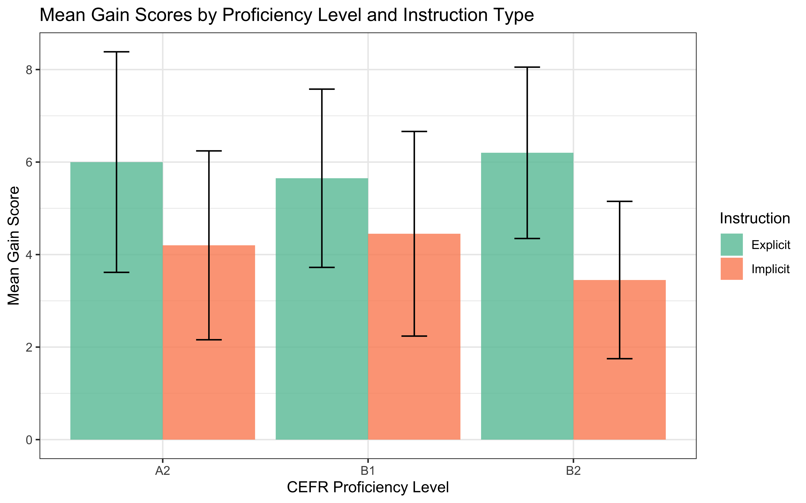
Tidy data（整然データ）とは、(1) 各変数が1つの列、(2) 各観測が1つの行、(3) 各値が1つのセルに対応するデータ形式です（Wickham, 2014）。Rの多くの統計関数やggplot2は tidy data（long format）を前提としています。
# Wide → Long 変換：テストスコアを縦持ちにする
ele_long <- ele_data |>
select(participant_id, proficiency_level, instruction_type,
toefl_score, vocabulary_test, reading_score, writing_score) |>
pivot_longer(
cols = c(toefl_score, vocabulary_test, reading_score, writing_score),
names_to = "test_type",
values_to = "score"
)
head(ele_long, 8)# A tibble: 8 × 5
participant_id proficiency_level instruction_type test_type score
<chr> <fct> <fct> <chr> <dbl>
1 P001 A2 Explicit toefl_score 53
2 P001 A2 Explicit vocabulary_test 45
3 P001 A2 Explicit reading_score 54
4 P001 A2 Explicit writing_score 44
5 P002 A2 Explicit toefl_score 49
6 P002 A2 Explicit vocabulary_test 44
7 P002 A2 Explicit reading_score 60
8 P002 A2 Explicit writing_score 50# Long → Wide 変換（元に戻す）
ele_wide <- ele_long |>
pivot_wider(
names_from = test_type,
values_from = score
)
head(ele_wide, 5)# A tibble: 5 × 7
participant_id proficiency_level instruction_type toefl_score vocabulary_test
<chr> <fct> <fct> <dbl> <dbl>
1 P001 A2 Explicit 53 45
2 P002 A2 Explicit 49 44
3 P003 A2 Explicit 44 35
4 P004 A2 Explicit 43 43
5 P005 A2 Explicit 54 42
# ℹ 2 more variables: reading_score <dbl>, writing_score <dbl># 熟達度×指導法の度数表
ele_data |>
count(proficiency_level, instruction_type) proficiency_level instruction_type n
1 A2 Explicit 20
2 A2 Implicit 20
3 B1 Explicit 20
4 B1 Implicit 20
5 B2 Explicit 20
6 B2 Implicit 20# 指導法別の人数（名前を変更）
ele_data |>
count(instruction_type, name = "n_participants") instruction_type n_participants
1 Explicit 60
2 Implicit 60# 列名を変更（新しい名前 = 古い名前）
ele_data |>
rename(
toefl = toefl_score,
vocab = vocabulary_test,
reading = reading_score
) |>
head(3) participant_id proficiency_level toefl vocab reading writing_score
1 P001 A2 53 45 54 44
2 P002 A2 49 44 60 50
3 P003 A2 44 35 62 38
instruction_type pretest posttest study_hours
1 Explicit 11 12 3.2
2 Explicit 8 17 14.5
3 Explicit 8 15 14.6ifelse() の拡張版で、3つ以上の条件分岐に対応します。
# TOEFLスコアに基づく熟達度ラベルの付与
ele_data |>
mutate(
toefl_band = case_when(
toefl_score >= 80 ~ "High (80+)",
toefl_score >= 60 ~ "Mid (60-79)",
TRUE ~ "Low (<60)"
)
) |>
count(toefl_band) toefl_band n
1 High (80+) 34
2 Low (<60) 52
3 Mid (60-79) 34# 複数のスコア列に対して平均・標準偏差を一括計算
ele_data |>
group_by(proficiency_level) |>
summarize(
across(
c(toefl_score, vocabulary_test, reading_score, writing_score),
list(mean = mean, sd = sd),
.names = "{.col}_{.fn}"
),
.groups = "drop"
) |>
gt() |>
tab_header(title = "熟達度別のテストスコア統計量") |>
fmt_number(columns = where(is.numeric), decimals = 2)| 熟達度別のテストスコア統計量 | ||||||||
| proficiency_level | toefl_score_mean | toefl_score_sd | vocabulary_test_mean | vocabulary_test_sd | reading_score_mean | reading_score_sd | writing_score_mean | writing_score_sd |
|---|---|---|---|---|---|---|---|---|
| A2 | 43.40 | 8.34 | 44.08 | 7.41 | 50.35 | 7.88 | 45.38 | 7.32 |
| B1 | 65.92 | 10.01 | 67.38 | 6.33 | 70.25 | 7.71 | 63.52 | 7.04 |
| B2 | 84.60 | 7.27 | 83.50 | 4.08 | 83.85 | 6.03 | 78.38 | 5.74 |
異なるデータフレーム（例: テストスコアとアンケート結果）を共通の列で結合します。
# 学習動機に関する追加データ（架空）
set.seed(2024)
motivation_data <- data.frame(
participant_id = paste0("P", sprintf("%03d", 1:120)),
intrinsic_motivation = round(rnorm(120, 4, 0.8), 1),
extrinsic_motivation = round(rnorm(120, 3.5, 0.9), 1)
)
# 元データにモチベーションデータを結合
ele_merged <- ele_data |>
left_join(motivation_data, by = "participant_id")
ele_merged |>
select(participant_id, proficiency_level, toefl_score,
intrinsic_motivation, extrinsic_motivation) |>
head(5) participant_id proficiency_level toefl_score intrinsic_motivation
1 P001 A2 53 4.8
2 P002 A2 49 4.4
3 P003 A2 44 3.9
4 P004 A2 43 3.8
5 P005 A2 54 4.9
extrinsic_motivation
1 3.3
2 3.2
3 2.3
4 3.3
5 2.9left_join(x, y): x のすべての行を残し、y の一致する行を結合（最も一般的）inner_join(x, y): 両方に存在する行のみ残すfull_join(x, y): すべての行を残す（一致しない部分は NA）anti_join(x, y): y に存在しない x の行のみ残す（欠損データの確認に便利）# 重複の除去
ele_data |>
distinct(proficiency_level, instruction_type) proficiency_level instruction_type
1 A2 Explicit
2 A2 Implicit
3 B1 Explicit
4 B1 Implicit
5 B2 Explicit
6 B2 Implicit# 上位N件の抽出
ele_data |>
arrange(desc(toefl_score)) |>
slice_head(n = 5) |>
select(participant_id, proficiency_level, toefl_score) participant_id proficiency_level toefl_score
1 P101 B2 100
2 P117 B2 98
3 P086 B2 93
4 P100 B2 93
5 P108 B2 93# グループ内の上位N件
ele_data |>
group_by(proficiency_level) |>
slice_max(order_by = toefl_score, n = 3) |>
select(participant_id, proficiency_level, toefl_score) |>
ungroup()# A tibble: 14 × 3
participant_id proficiency_level toefl_score
<chr> <fct> <dbl>
1 P006 A2 55
2 P034 A2 55
3 P005 A2 54
4 P021 A2 54
5 P044 B1 85
6 P050 B1 84
7 P061 B1 81
8 P065 B1 81
9 P101 B2 100
10 P117 B2 98
11 P086 B2 93
12 P100 B2 93
13 P108 B2 93
14 P112 B2 93gt パッケージは、出版品質のテーブルを作成するためのパッケージです。本書のすべての章で分析結果の表示に使用しています。ここでは基本的な使い方を紹介します。
gt() は、データフレームをパイプで渡すだけで基本的なテーブルが生成されます。そこに装飾・書式設定を段階的に追加していきます。
# 最も基本的な使い方
ele_data |>
head(5) |>
gt()| participant_id | proficiency_level | toefl_score | vocabulary_test | reading_score | writing_score | instruction_type | pretest | posttest | study_hours |
|---|---|---|---|---|---|---|---|---|---|
| P001 | A2 | 53 | 45 | 54 | 44 | Explicit | 11 | 12 | 3.2 |
| P002 | A2 | 49 | 44 | 60 | 50 | Explicit | 8 | 17 | 14.5 |
| P003 | A2 | 44 | 35 | 62 | 38 | Explicit | 8 | 15 | 14.6 |
| P004 | A2 | 43 | 43 | 60 | 39 | Explicit | 12 | 18 | 2.6 |
| P005 | A2 | 54 | 42 | 46 | 50 | Explicit | 7 | 13 | 10.9 |
ele_data |>
head(5) |>
gt() |>
tab_header(
title = "ELE学習者データ（サンプル）",
subtitle = "最初の5名分のデータ"
)| ELE学習者データ（サンプル） | |||||||||
| 最初の5名分のデータ | |||||||||
| participant_id | proficiency_level | toefl_score | vocabulary_test | reading_score | writing_score | instruction_type | pretest | posttest | study_hours |
|---|---|---|---|---|---|---|---|---|---|
| P001 | A2 | 53 | 45 | 54 | 44 | Explicit | 11 | 12 | 3.2 |
| P002 | A2 | 49 | 44 | 60 | 50 | Explicit | 8 | 17 | 14.5 |
| P003 | A2 | 44 | 35 | 62 | 38 | Explicit | 8 | 15 | 14.6 |
| P004 | A2 | 43 | 43 | 60 | 39 | Explicit | 12 | 18 | 2.6 |
| P005 | A2 | 54 | 42 | 46 | 50 | Explicit | 7 | 13 | 10.9 |
ele_data |>
group_by(proficiency_level) |>
summarize(
n = n(),
mean_toefl = mean(toefl_score),
sd_toefl = sd(toefl_score),
.groups = "drop"
) |>
gt() |>
tab_header(title = "熟達度別TOEFL記述統計") |>
cols_label(
proficiency_level = "熟達度",
n = "人数",
mean_toefl = "M",
sd_toefl = "SD"
)| 熟達度別TOEFL記述統計 | |||
| 熟達度 | 人数 | M | SD |
|---|---|---|---|
| A2 | 40 | 43.400 | 8.341432 |
| B1 | 40 | 65.925 | 10.011244 |
| B2 | 40 | 84.600 | 7.274120 |
ele_data |>
group_by(proficiency_level, instruction_type) |>
summarize(
n = n(),
mean_gain = mean(posttest - pretest),
sd_gain = sd(posttest - pretest),
pass_rate = mean(posttest >= 20),
.groups = "drop"
) |>
gt() |>
tab_header(title = "群別分析結果") |>
fmt_number(columns = c(mean_gain, sd_gain), decimals = 2) |>
fmt_percent(columns = pass_rate, decimals = 1) |>
cols_label(
proficiency_level = "熟達度",
instruction_type = "指導法",
n = "n",
mean_gain = "M (Gain)",
sd_gain = "SD (Gain)",
pass_rate = "合格率"
)| 群別分析結果 | |||||
| 熟達度 | 指導法 | n | M (Gain) | SD (Gain) | 合格率 |
|---|---|---|---|---|---|
| A2 | Explicit | 20 | 6.00 | 2.38 | 5.0% |
| A2 | Implicit | 20 | 4.20 | 2.04 | 0.0% |
| B1 | Explicit | 20 | 5.65 | 1.93 | 55.0% |
| B1 | Implicit | 20 | 4.45 | 2.21 | 40.0% |
| B2 | Explicit | 20 | 6.20 | 1.85 | 90.0% |
| B2 | Implicit | 20 | 3.45 | 1.70 | 85.0% |
ele_data |>
group_by(proficiency_level) |>
summarize(
n = n(),
mean_toefl = mean(toefl_score),
sd_toefl = sd(toefl_score),
mean_vocab = mean(vocabulary_test),
sd_vocab = sd(vocabulary_test),
.groups = "drop"
) |>
gt(rowname_col = "proficiency_level") |>
tab_header(
title = "熟達度別テストスコア",
subtitle = "TOEFL iBT および語彙サイズテスト"
) |>
fmt_number(columns = c(mean_toefl, sd_toefl, mean_vocab, sd_vocab),
decimals = 2) |>
cols_label(
n = "n", mean_toefl = "M", sd_toefl = "SD",
mean_vocab = "M", sd_vocab = "SD"
) |>
tab_spanner(label = "TOEFL iBT", columns = c(mean_toefl, sd_toefl)) |>
tab_spanner(label = "Vocabulary Test", columns = c(mean_vocab, sd_vocab)) |>
tab_footnote(
footnote = "TOEFL iBT scores are on a 0-120 scale.",
locations = cells_column_spanners("TOEFL iBT")
) |>
tab_source_note(source_note = "Note. Data are from a simulated ELE study.")| 熟達度別テストスコア | |||||
| TOEFL iBT および語彙サイズテスト | |||||
| n |
TOEFL iBT1
|
Vocabulary Test
|
|||
|---|---|---|---|---|---|
| M | SD | M | SD | ||
| A2 | 40 | 43.40 | 8.34 | 44.08 | 7.41 |
| B1 | 40 | 65.92 | 10.01 | 67.38 | 6.33 |
| B2 | 40 | 84.60 | 7.27 | 83.50 | 4.08 |
| 1 TOEFL iBT scores are on a 0-120 scale. | |||||
| Note. Data are from a simulated ELE study. | |||||
gt(): テーブル生成tab_header(): タイトル・サブタイトルcols_label(): 列名の変更fmt_number(): 小数点以下の桁数指定fmt_percent(): パーセント表示tab_spanner(): 列のグループ化（スパナー）tab_footnote(): 脚注tab_source_note(): ソースノート（テーブル下部の注記）cols_align(): 列の配置（左寄せ・中央・右寄せ）詳細は gt公式ドキュメント を参照してください。
gt() で作成したテーブルは、print() を使うとHTMLソースコードがそのまま表示されてしまい、テーブルとして正しくレンダリングされません。これはRを学び始めた方が頻繁に遭遇する問題です。
# ❌ print() で gt オブジェクトを表示すると HTML ソースが出力される
my_table <- ele_data |>
head(3) |>
gt() |>
tab_header(title = "テスト")
# print(my_table) とすると：
# コンソールには <table class="gt_table"> ... のようなHTMLが表示される
# Quarto/RMarkdown上ではテーブルとして描画されるが、
# cat() や print() でラップするとHTMLソースに戻ってしまう
# ✅ gt オブジェクトはそのまま（変数名だけで）出力する
my_table| テスト | |||||||||
| participant_id | proficiency_level | toefl_score | vocabulary_test | reading_score | writing_score | instruction_type | pretest | posttest | study_hours |
|---|---|---|---|---|---|---|---|---|---|
| P001 | A2 | 53 | 45 | 54 | 44 | Explicit | 11 | 12 | 3.2 |
| P002 | A2 | 49 | 44 | 60 | 50 | Explicit | 8 | 17 | 14.5 |
| P003 | A2 | 44 | 35 | 62 | 38 | Explicit | 8 | 15 | 14.6 |
先ほど「for ループ内では print() が必要」と述べましたが、gt() オブジェクトに対して print() を使うと、テーブルではなくHTMLソースが表示されてしまいます。ループ内で gt() テーブルを表示したい場合は、以下の方法を使います。
# ❌ 意図通りに表示されない
for (level in c("A2", "B1", "B2")) {
ele_data |>
filter(proficiency_level == level) |>
head(3) |>
gt() |>
print() # ← HTMLソースが出力される
}
# ✅ 方法1: Quarto/RMarkdown では各テーブルを個別のコードチャンクに分ける
# ✅ 方法2: print() ではなく htmltools::html_print() を使う
# for (level in c("A2", "B1", "B2")) {
# tbl <- ele_data |>
# filter(proficiency_level == level) |>
# head(3) |>
# gt() |>
# tab_header(title = paste("Proficiency:", level))
# htmltools::html_print(tbl)
# }
# ✅ 方法3: リストに格納して gt_group() で一括表示
# tables <- map(c("A2", "B1", "B2"), ~ {
# ele_data |> filter(proficiency_level == .x) |> head(3) |>
# gt() |> tab_header(title = paste("Proficiency:", .x))
# })
# gt_group(.list = tables)cat() はテキストの出力に特化した関数です。gt() オブジェクトを cat() に渡しても意味のある結果は得られません。gt() のテーブルと cat() のテキスト出力は、そもそも用途が異なります。
gt() で作成し、変数名だけで出力（Quarto/RMarkdownで自動レンダリング）cat() や sprintf() を使用broom::tidy() でデータフレーム化 → gt() に渡す# ❌ gt() と cat() を混ぜようとする
# cat(my_table) # エラー、または意味不明な出力
# ✅ テキストはテキスト、テーブルはテーブルで分ける
cat("=== t検定の結果 ===\n") # テキスト出力
broom::tidy(t_result) |> gt() # テーブル出力（次の行として表示される）ここまでに紹介した tidyverse、gt()、ggplot2 の操作を、Rに組み込みの iris データセットを使って実践的に確認します。iris はRを学ぶ際に世界中で使用される定番データセットで、3種のアヤメ（setosa, versicolor, virginica）の花弁・萼片の長さと幅を記録したものです。英語教育研究のデータとは異なりますが、wide → long変換、グループ集計、可視化の一連の流れを練習するのに最適です。
# irisデータの構造を確認
str(iris)'data.frame': 150 obs. of 5 variables:
$ Sepal.Length: num 5.1 4.9 4.7 4.6 5 5.4 4.6 5 4.4 4.9 ...
$ Sepal.Width : num 3.5 3 3.2 3.1 3.6 3.9 3.4 3.4 2.9 3.1 ...
$ Petal.Length: num 1.4 1.4 1.3 1.5 1.4 1.7 1.4 1.5 1.4 1.5 ...
$ Petal.Width : num 0.2 0.2 0.2 0.2 0.2 0.4 0.3 0.2 0.2 0.1 ...
$ Species : Factor w/ 3 levels "setosa","versicolor",..: 1 1 1 1 1 1 1 1 1 1 ...# 先頭行をgt()で表示
head(iris, 8) |>
gt() |>
tab_header(
title = "irisデータセット（先頭8行）",
subtitle = "3種のアヤメの花弁・萼片の計測データ"
)| irisデータセット（先頭8行） | ||||
| 3種のアヤメの花弁・萼片の計測データ | ||||
| Sepal.Length | Sepal.Width | Petal.Length | Petal.Width | Species |
|---|---|---|---|---|
| 5.1 | 3.5 | 1.4 | 0.2 | setosa |
| 4.9 | 3.0 | 1.4 | 0.2 | setosa |
| 4.7 | 3.2 | 1.3 | 0.2 | setosa |
| 4.6 | 3.1 | 1.5 | 0.2 | setosa |
| 5.0 | 3.6 | 1.4 | 0.2 | setosa |
| 5.4 | 3.9 | 1.7 | 0.4 | setosa |
| 4.6 | 3.4 | 1.4 | 0.3 | setosa |
| 5.0 | 3.4 | 1.5 | 0.2 | setosa |
# 種別の記述統計
iris |>
group_by(Species) |>
summarize(
n = n(),
across(
c(Sepal.Length, Sepal.Width, Petal.Length, Petal.Width),
list(M = mean, SD = sd),
.names = "{.col}_{.fn}"
),
.groups = "drop"
) |>
gt() |>
tab_header(title = "種別の記述統計量") |>
fmt_number(columns = where(is.numeric) & !c(n), decimals = 2) |>
tab_spanner(label = "Sepal Length", columns = starts_with("Sepal.Length")) |>
tab_spanner(label = "Sepal Width", columns = starts_with("Sepal.Width")) |>
tab_spanner(label = "Petal Length", columns = starts_with("Petal.Length")) |>
tab_spanner(label = "Petal Width", columns = starts_with("Petal.Width"))| 種別の記述統計量 | |||||||||
| Species | n |
Sepal Length
|
Sepal Width
|
Petal Length
|
Petal Width
|
||||
|---|---|---|---|---|---|---|---|---|---|
| Sepal.Length_M | Sepal.Length_SD | Sepal.Width_M | Sepal.Width_SD | Petal.Length_M | Petal.Length_SD | Petal.Width_M | Petal.Width_SD | ||
| setosa | 50 | 5.01 | 0.35 | 3.43 | 0.38 | 1.46 | 0.17 | 0.25 | 0.11 |
| versicolor | 50 | 5.94 | 0.52 | 2.77 | 0.31 | 4.26 | 0.47 | 1.33 | 0.20 |
| virginica | 50 | 6.59 | 0.64 | 2.97 | 0.32 | 5.55 | 0.55 | 2.03 | 0.27 |
iris データは wide形式（各計測値が別々の列）ですが、ggplot2で「計測値の種類ごとに色分けしたい」場合は long形式 に変換する必要があります。
# wide → long 変換
iris_long <- iris |>
mutate(id = row_number()) |> # 行を識別するIDを追加
pivot_longer(
cols = c(Sepal.Length, Sepal.Width, Petal.Length, Petal.Width),
names_to = "measurement", # 列名 → "measurement" 列
values_to = "value" # 値 → "value" 列
)
# 変換結果の確認
head(iris_long, 12)# A tibble: 12 × 4
Species id measurement value
<fct> <int> <chr> <dbl>
1 setosa 1 Sepal.Length 5.1
2 setosa 1 Sepal.Width 3.5
3 setosa 1 Petal.Length 1.4
4 setosa 1 Petal.Width 0.2
5 setosa 2 Sepal.Length 4.9
6 setosa 2 Sepal.Width 3
7 setosa 2 Petal.Length 1.4
8 setosa 2 Petal.Width 0.2
9 setosa 3 Sepal.Length 4.7
10 setosa 3 Sepal.Width 3.2
11 setosa 3 Petal.Length 1.3
12 setosa 3 Petal.Width 0.2上のコードでは、元の4列（Sepal.Length, Sepal.Width, Petal.Length, Petal.Width）が2列（measurement, value）に「縦に伸びた」形になります。元の150行 × 4計測値 = 600行のlong形式データが得られます。
cols: 縦持ちにしたい列を指定names_to: 元の列名を格納する新しい列の名前values_to: 元の値を格納する新しい列の名前列名に構造がある場合（例: Sepal.Length → 部位 Sepal + 計測 Length）、names_sep や names_pattern で列名を複数の変数に分解できます。
# 列名を "." で分割し、部位と計測タイプに分ける
iris_long2 <- iris |>
mutate(id = row_number()) |>
pivot_longer(
cols = c(Sepal.Length, Sepal.Width, Petal.Length, Petal.Width),
names_to = c("part", "dimension"), # 2つの変数に分割
names_sep = "\\.", # "." で分割（正規表現なのでエスケープ）
values_to = "cm"
)
head(iris_long2, 12)# A tibble: 12 × 5
Species id part dimension cm
<fct> <int> <chr> <chr> <dbl>
1 setosa 1 Sepal Length 5.1
2 setosa 1 Sepal Width 3.5
3 setosa 1 Petal Length 1.4
4 setosa 1 Petal Width 0.2
5 setosa 2 Sepal Length 4.9
6 setosa 2 Sepal Width 3
7 setosa 2 Petal Length 1.4
8 setosa 2 Petal Width 0.2
9 setosa 3 Sepal Length 4.7
10 setosa 3 Sepal Width 3.2
11 setosa 3 Petal Length 1.3
12 setosa 3 Petal Width 0.2# 部位×計測タイプ別の平均値
iris_long2 |>
group_by(Species, part, dimension) |>
summarize(mean_cm = mean(cm), .groups = "drop") |>
gt() |>
tab_header(title = "種別 × 部位 × 計測タイプ別の平均値 (cm)") |>
fmt_number(columns = mean_cm, decimals = 2)| 種別 × 部位 × 計測タイプ別の平均値 (cm) | |||
| Species | part | dimension | mean_cm |
|---|---|---|---|
| setosa | Petal | Length | 1.46 |
| setosa | Petal | Width | 0.25 |
| setosa | Sepal | Length | 5.01 |
| setosa | Sepal | Width | 3.43 |
| versicolor | Petal | Length | 4.26 |
| versicolor | Petal | Width | 1.33 |
| versicolor | Sepal | Length | 5.94 |
| versicolor | Sepal | Width | 2.77 |
| virginica | Petal | Length | 5.55 |
| virginica | Petal | Width | 2.03 |
| virginica | Sepal | Length | 6.59 |
| virginica | Sepal | Width | 2.97 |
long形式のデータをwide形式に戻す操作です。集計結果をテーブルとして見やすく整形する際にも活用します。
# 種別の平均値をlong形式で計算
iris_means_long <- iris_long2 |>
group_by(Species, part, dimension) |>
summarize(mean_cm = mean(cm), .groups = "drop")
# wide形式に変換（計測タイプを列に展開）
iris_means_wide <- iris_means_long |>
pivot_wider(
names_from = dimension,
values_from = mean_cm
)
iris_means_wide |>
gt() |>
tab_header(title = "種別 × 部位の平均計測値") |>
fmt_number(columns = c(Length, Width), decimals = 2) |>
cols_label(Species = "Species", part = "Part",
Length = "Length (cm)", Width = "Width (cm)")| 種別 × 部位の平均計測値 | |||
| Species | Part | Length (cm) | Width (cm) |
|---|---|---|---|
| setosa | Petal | 1.46 | 0.25 |
| setosa | Sepal | 5.01 | 3.43 |
| versicolor | Petal | 4.26 | 1.33 |
| versicolor | Sepal | 5.94 | 2.77 |
| virginica | Petal | 5.55 | 2.03 |
| virginica | Sepal | 6.59 | 2.97 |
fill や color に計測変数を割り当てたい時、facet_wrap() で変数ごとにパネル分割したい時に使います。ggplot2 はレイヤーを + で重ねていく仕組みです。1つずつレイヤーを追加する過程を確認しましょう。
# Step 1: データとエステティックの指定（まだ何も描画されない）
# ggplot(iris, aes(x = Petal.Length, y = Petal.Width))
# Step 2: ジオメトリを追加（点が表示される）
# ggplot(iris, aes(x = Petal.Length, y = Petal.Width)) +
# geom_point()
# Step 3: 色で種を区別 + 回帰直線 + ラベル + テーマ（完成形）
ggplot(iris, aes(x = Petal.Length, y = Petal.Width, color = Species)) +
geom_point(alpha = 0.7, size = 2) +
geom_smooth(method = "lm", se = TRUE, alpha = 0.15) +
labs(
title = "Petal Length vs. Petal Width by Species",
x = "Petal Length (cm)",
y = "Petal Width (cm)",
color = "Species"
) +
scale_color_brewer(palette = "Dark2") +
theme_bw(base_size = 12) +
theme(legend.position = "bottom")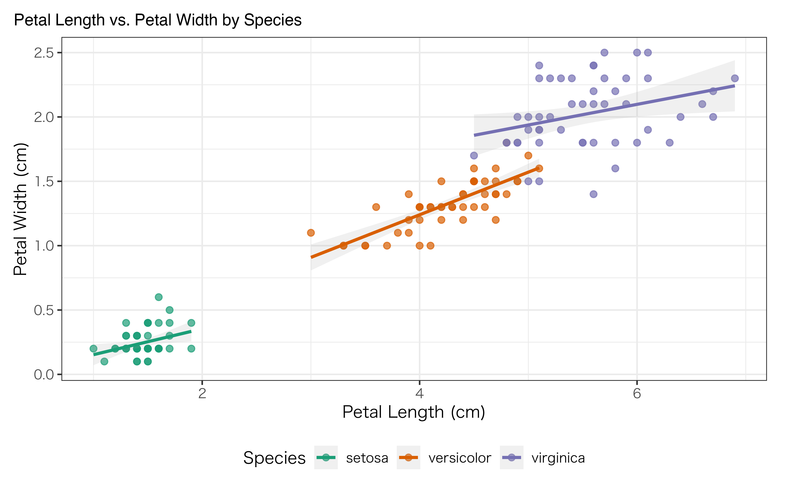
long形式のデータを使い、計測変数ごとにヒストグラムを描画します。
# long形式データを使ったファセット分割
ggplot(iris_long, aes(x = value, fill = Species)) +
geom_histogram(binwidth = 0.3, alpha = 0.7, color = "white",
position = "identity") +
facet_wrap(~ measurement, scales = "free", ncol = 2) +
labs(
title = "Distribution of Measurements by Species",
x = "Value (cm)", y = "Frequency",
fill = "Species"
) +
scale_fill_brewer(palette = "Set2") +
theme_bw()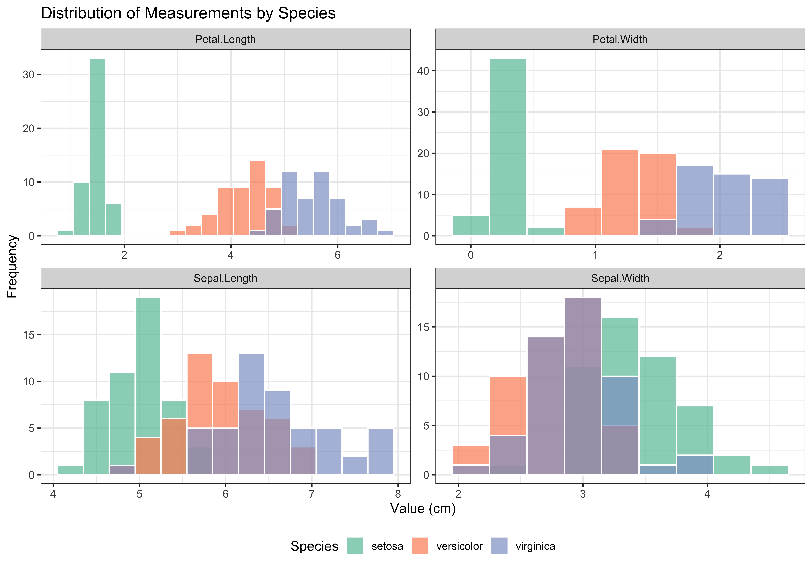
facet_wrap(~ variable): 1つの変数でパネル分割。ncol や nrow でレイアウトを制御。scales = "free" で各パネルの軸範囲を独立させる。facet_grid(row_var ~ col_var): 2つの変数で行×列のグリッド分割。例: facet_grid(Species ~ measurement) で種を行、計測タイプを列に配置。# long形式データで全計測値を一度に比較
ggplot(iris_long, aes(x = Species, y = value, fill = Species)) +
geom_boxplot(alpha = 0.6, outlier.shape = NA) +
geom_jitter(width = 0.15, alpha = 0.3, size = 1) +
facet_wrap(~ measurement, scales = "free_y", ncol = 4) +
labs(
title = "Comparison of Measurements Across Species",
x = "Species", y = "Value (cm)"
) +
theme_bw() +
theme(legend.position = "none",
axis.text.x = element_text(angle = 30, hjust = 1))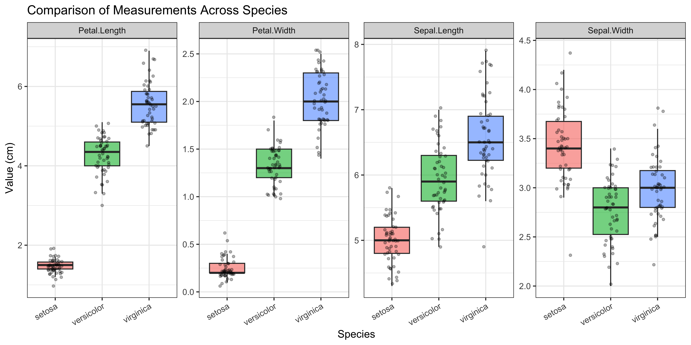
# names_sepで分割したデータを使用
iris_long2 |>
filter(part == "Petal") |>
ggplot(aes(x = Species, y = cm, fill = Species)) +
geom_violin(alpha = 0.4, draw_quantiles = c(0.25, 0.5, 0.75)) +
geom_jitter(width = 0.1, alpha = 0.2, size = 1) +
facet_wrap(~ dimension, scales = "free_y") +
labs(
title = "Petal Measurements: Violin Plot with Quartiles",
x = "Species", y = "Measurement (cm)"
) +
scale_fill_brewer(palette = "Pastel1") +
theme_bw() +
theme(legend.position = "none")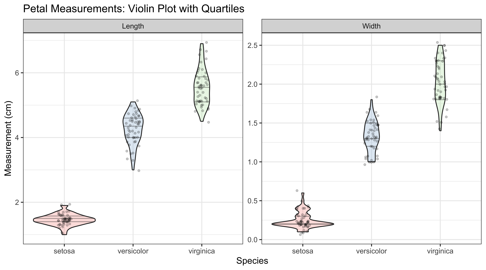
# 相関行列を計算
iris_cor <- iris |>
select(where(is.numeric)) |>
cor()
# long形式に変換してggplot2で描画
iris_cor |>
as.data.frame() |>
rownames_to_column("var1") |>
pivot_longer(-var1, names_to = "var2", values_to = "correlation") |>
ggplot(aes(x = var1, y = var2, fill = correlation)) +
geom_tile(color = "white") +
geom_text(aes(label = round(correlation, 2)), size = 4) +
scale_fill_gradient2(low = "#2166ac", mid = "white", high = "#b2182b",
midpoint = 0, limits = c(-1, 1)) +
labs(title = "Correlation Matrix of Iris Measurements",
x = "", y = "", fill = "r") +
theme_bw() +
theme(axis.text.x = element_text(angle = 45, hjust = 1))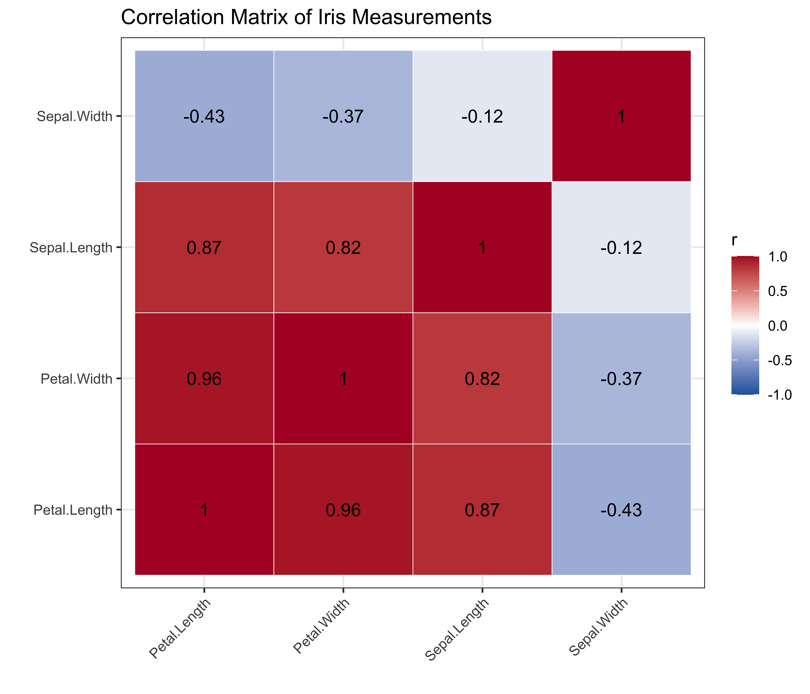
最後に、irisデータを使って「データ読み込み → 整形 → 集計 → 可視化 → テーブル出力」の一連の流れを通しで実行します。これは英語教育研究でも同様のワークフローになります。
# Step 1: データ準備（pivot_longer + 変数分割）
iris_tidy <- iris |>
mutate(id = row_number()) |>
pivot_longer(
cols = -c(id, Species),
names_to = c("part", "dimension"),
names_sep = "\\.",
values_to = "cm"
)
# Step 2: グループ集計
iris_summary <- iris_tidy |>
group_by(Species, part, dimension) |>
summarize(
n = n(),
mean = mean(cm),
sd = sd(cm),
median = median(cm),
.groups = "drop"
)
# Step 3: 可視化（平均値の比較）
ggplot(iris_summary, aes(x = Species, y = mean, fill = dimension)) +
geom_col(position = "dodge", alpha = 0.8) +
geom_errorbar(
aes(ymin = mean - sd, ymax = mean + sd),
position = position_dodge(0.9), width = 0.25
) +
facet_wrap(~ part) +
labs(
title = "Mean Measurements (±SD) by Species and Part",
x = "Species", y = "Mean (cm)",
fill = "Dimension"
) +
scale_fill_brewer(palette = "Set1") +
theme_bw()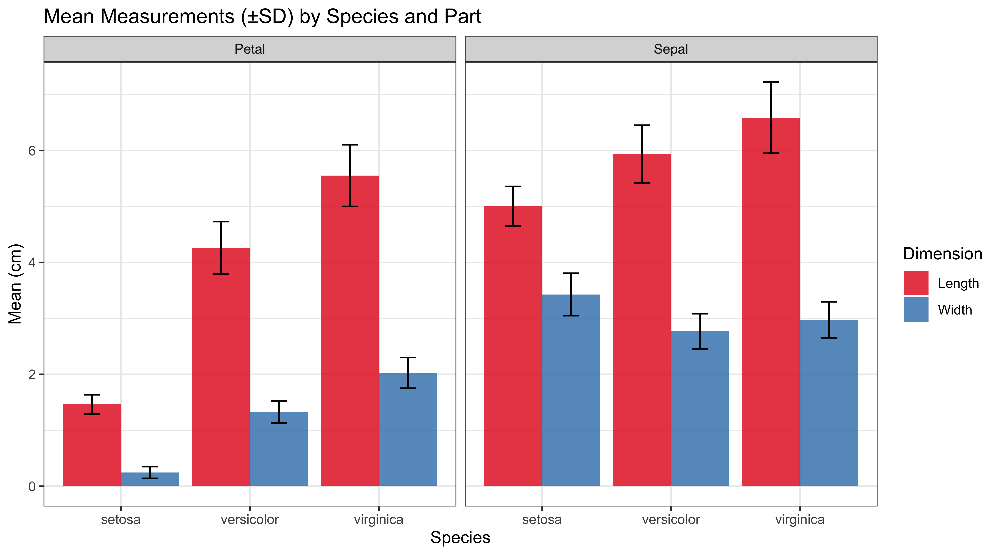
# Step 4: テーブル出力（pivot_widerで整形 → gt()で装飾）
iris_summary |>
mutate(label = paste0(round(mean, 2), " (", round(sd, 2), ")")) |>
select(Species, part, dimension, label) |>
pivot_wider(
names_from = c(part, dimension),
values_from = label,
names_sep = " "
) |>
gt() |>
tab_header(
title = "Iris計測データの記述統計",
subtitle = "M (SD)"
) |>
tab_spanner(label = "Petal", columns = starts_with("Petal")) |>
tab_spanner(label = "Sepal", columns = starts_with("Sepal")) |>
tab_source_note("Note. Values represent M (SD) in centimeters.")| Iris計測データの記述統計 | ||||
| M (SD) | ||||
| Species |
Petal
|
Sepal
|
||
|---|---|---|---|---|
| Petal Length | Petal Width | Sepal Length | Sepal Width | |
| setosa | 1.46 (0.17) | 0.25 (0.11) | 5.01 (0.35) | 3.43 (0.38) |
| versicolor | 4.26 (0.47) | 1.33 (0.2) | 5.94 (0.52) | 2.77 (0.31) |
| virginica | 5.55 (0.55) | 2.03 (0.27) | 6.59 (0.64) | 2.97 (0.32) |
| Note. Values represent M (SD) in centimeters. | ||||
上の一連の流れは、英語教育研究のデータにそのまま適用できます。
iris → テストスコアのデータフレームSpecies → 熟達度レベルや指導法Sepal.Length 等 → TOEFL Reading, Writing, Listening, Speakingpivot_longer → テストの種類を1列にまとめて facet_wrap() で比較group_by() |> summarize() → 群別の記述統計gt() + tab_spanner() → 論文に掲載するテーブルこの「整形 → 集計 → 可視化 → テーブル」のパイプラインは、データ分析の基本的なワークフローとして身につけておくと、あらゆる分析場面で応用できます。
ggplot2 は「グラフィックスの文法」（Grammar of Graphics）に基づく可視化パッケージで、データ、エステティックマッピング（aes: 軸や色の対応付け）、ジオメトリ（geom: 図の種類）を組み合わせて図を構築します。
# TOEFL得点分布を熟達度別に表示
ggplot(ele_data, aes(x = toefl_score, fill = proficiency_level)) +
geom_histogram(binwidth = 5, alpha = 0.7, color = "white") +
facet_wrap(~ proficiency_level, scales = "free_y") +
labs(title = "TOEFL Score Distribution by Proficiency Level",
x = "TOEFL iBT Score", y = "Frequency") +
theme(legend.position = "none") +
scale_fill_brewer(palette = "Blues")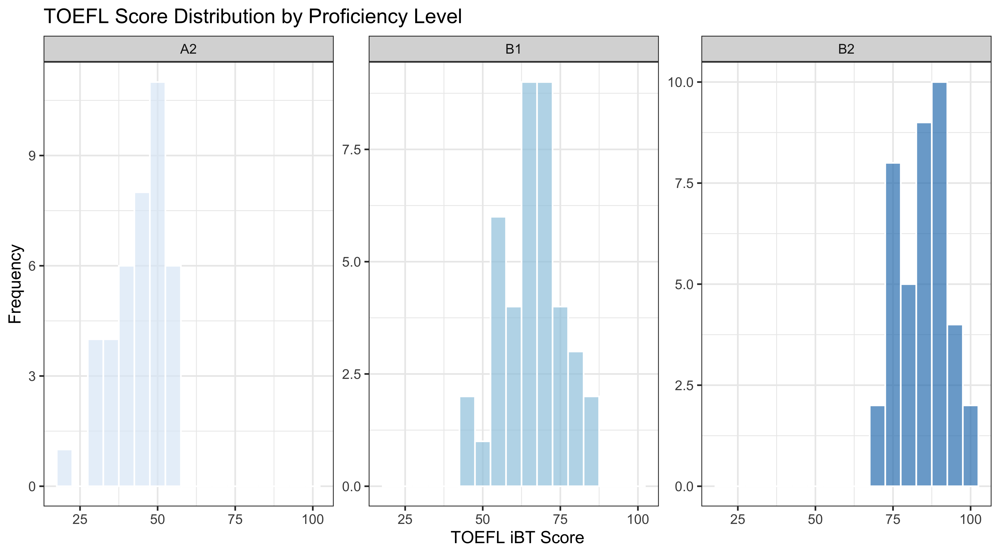
# 指導法別の事後テストスコア比較
ggplot(ele_data, aes(x = instruction_type, y = posttest,
fill = instruction_type)) +
geom_violin(alpha = 0.3) +
geom_boxplot(width = 0.3, alpha = 0.7) +
geom_jitter(width = 0.1, alpha = 0.2, size = 1) +
facet_wrap(~ proficiency_level) +
labs(title = "Posttest Scores by Instruction Type and Proficiency",
x = "Instruction Type", y = "Posttest Score (0-30)") +
theme(legend.position = "none") +
scale_fill_brewer(palette = "Set2")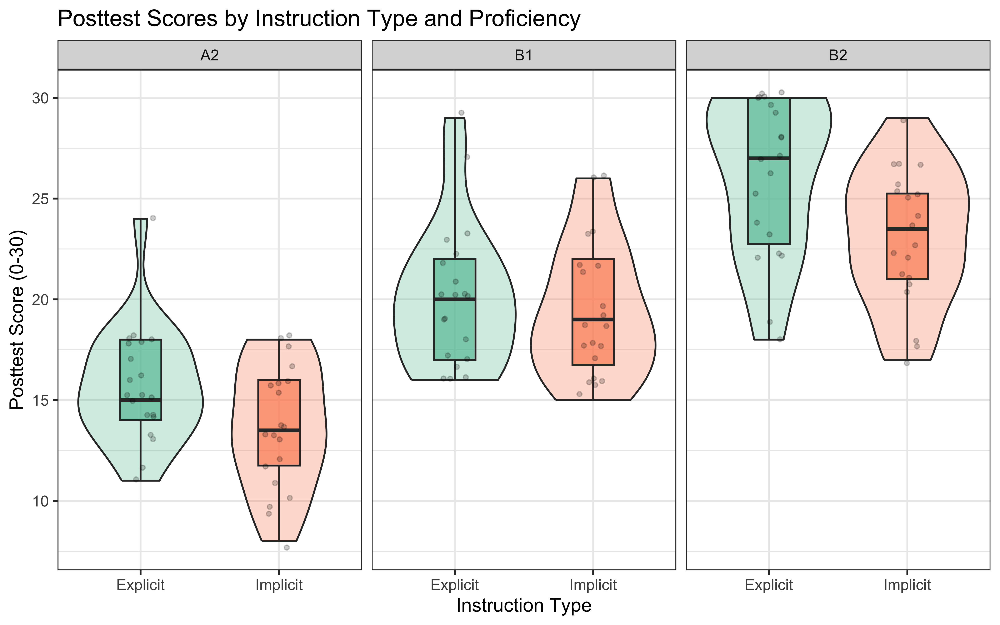
# 語彙テストと読解テストの関係
ggplot(ele_data, aes(x = vocabulary_test, y = reading_score,
color = proficiency_level)) +
geom_point(alpha = 0.6, size = 2) +
geom_smooth(method = "lm", se = TRUE, alpha = 0.2) +
labs(title = "Vocabulary Test vs. Reading Score",
x = "Vocabulary Test Score", y = "Reading Score",
color = "Proficiency") +
scale_color_brewer(palette = "Dark2")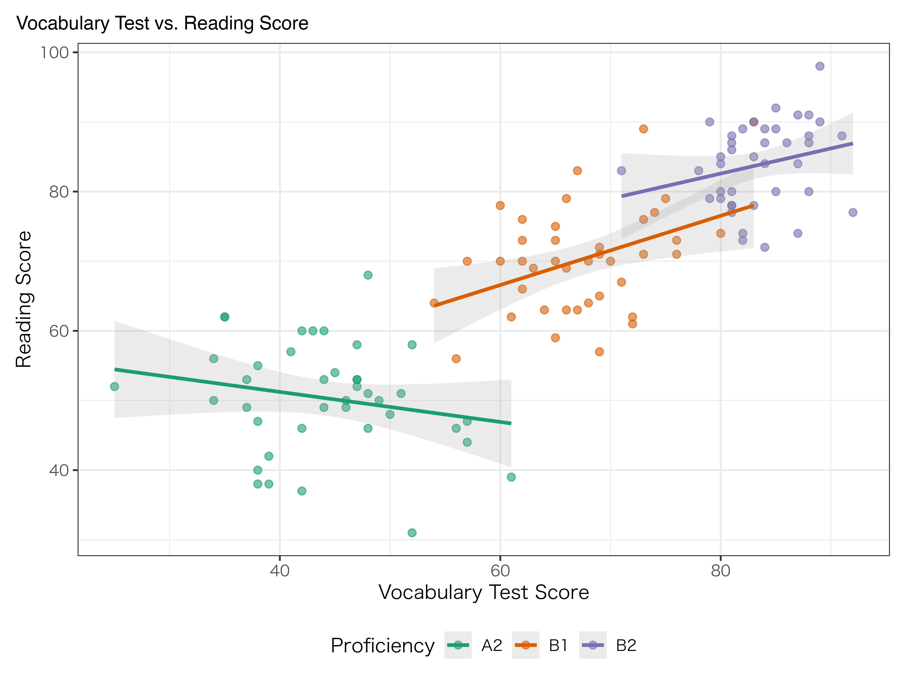
# 事前・事後テストの平均を指導法別に比較
ele_data |>
pivot_longer(cols = c(pretest, posttest),
names_to = "timepoint", values_to = "score") |>
mutate(timepoint = factor(timepoint,
levels = c("pretest", "posttest"),
labels = c("Pretest", "Posttest"))) |>
group_by(instruction_type, timepoint) |>
summarize(mean_score = mean(score), se = sd(score) / sqrt(n()),
.groups = "drop") |>
ggplot(aes(x = timepoint, y = mean_score, fill = instruction_type)) +
geom_col(position = "dodge", alpha = 0.8) +
geom_errorbar(aes(ymin = mean_score - se, ymax = mean_score + se),
position = position_dodge(0.9), width = 0.25) +
labs(title = "Pre-Post Test Scores by Instruction Type",
x = "Timepoint", y = "Mean Score (0-30)",
fill = "Instruction") +
scale_fill_brewer(palette = "Set2")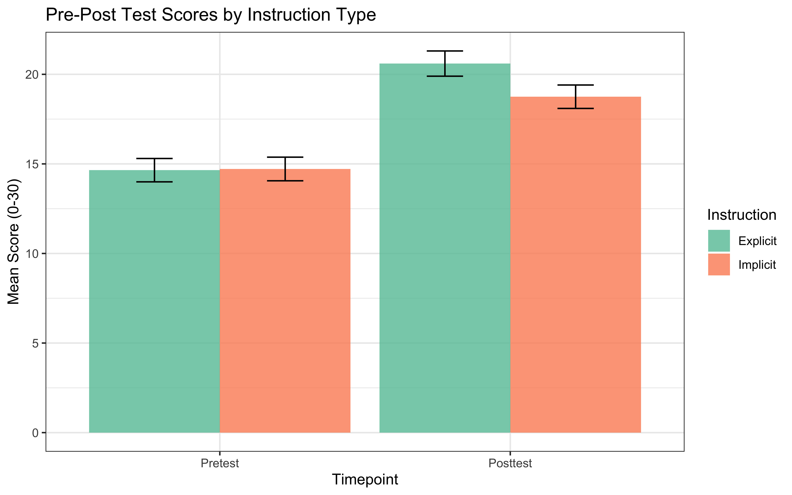
# 本書で使用するスタイルの例
ggplot(ele_data, aes(x = toefl_score, y = vocabulary_test)) +
geom_point(aes(color = proficiency_level), alpha = 0.6, size = 2) +
geom_smooth(method = "lm", color = "black", linewidth = 0.8) +
labs(
title = "TOEFL Score and Vocabulary Test Performance",
subtitle = "N = 120 Japanese EFL learners",
x = "TOEFL iBT Score",
y = "Vocabulary Test Score",
color = "CEFR Level",
caption = "Note. Shaded area = 95% CI."
) +
theme_bw(base_size = 12) +
theme(
plot.title = element_text(face = "bold"),
legend.position = "bottom"
) +
scale_color_brewer(palette = "Dark2")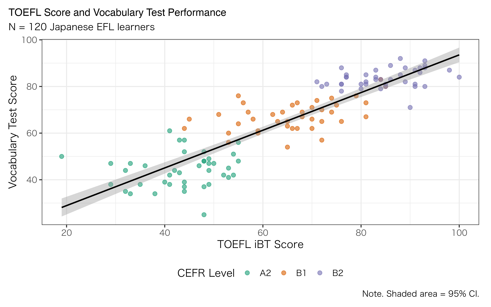
ggsave() を使用して、出版品質の図を保存できます。
ggsave("figures/toefl_vocab_scatter.png", width = 8, height = 6, dpi = 300)ggsave() は直前に描画した図を自動的に保存します。ファイル形式は拡張子から自動判定されます（.png, .pdf, .svg 等）。
Base Rの plot(), hist(), boxplot() 等も使用できますが、本書では柔軟性と一貫性の観点から ggplot2 を主に使用します。
本節では、英語教育研究で頻出する基礎的な統計手法のRでの実行方法を概説します。各手法の理論的背景や詳細な解釈については、該当する章を参照してください。
本節では上記の各手法を「Rでどう実行するか」に焦点を当て、最小限のコードで結果を得る方法を示します。
# psych::describe() で包括的な記述統計を取得
ele_data |>
select(toefl_score, vocabulary_test, reading_score,
writing_score, pretest, posttest) |>
psych::describe() |>
as.data.frame() |>
rownames_to_column("variable") |>
select(variable, n, mean, sd, median, min, max, skew, kurtosis) |>
gt() |>
tab_header(title = "記述統計量") |>
fmt_number(columns = c(mean, sd, median, skew, kurtosis), decimals = 2) |>
fmt_number(columns = c(min, max), decimals = 0)| 記述統計量 | ||||||||
| variable | n | mean | sd | median | min | max | skew | kurtosis |
|---|---|---|---|---|---|---|---|---|
| toefl_score | 120 | 64.64 | 18.95 | 66.50 | 19 | 100 | −0.15 | −1.06 |
| vocabulary_test | 120 | 64.98 | 17.34 | 67.00 | 25 | 92 | −0.31 | −1.17 |
| reading_score | 120 | 68.15 | 15.57 | 70.00 | 31 | 98 | −0.25 | −0.95 |
| writing_score | 120 | 62.43 | 15.11 | 64.50 | 30 | 89 | −0.18 | −1.11 |
| pretest | 120 | 14.68 | 5.06 | 14.00 | 4 | 26 | 0.12 | −0.74 |
| posttest | 120 | 19.67 | 5.32 | 19.00 | 8 | 30 | 0.21 | −0.70 |
研究課題: 明示的指導（Explicit）と暗示的指導（Implicit）で、事後テスト得点に統計的に有意な差があるか？
# Welchのt検定（等分散を仮定しない：デフォルト）
t_result <- t.test(posttest ~ instruction_type, data = ele_data)
t_result
Welch Two Sample t-test
data: posttest by instruction_type
t = 1.9256, df = 117.36, p-value = 0.05658
alternative hypothesis: true difference in means between group Explicit and group Implicit is not equal to 0
95 percent confidence interval:
-0.05267907 3.75267907
sample estimates:
mean in group Explicit mean in group Implicit
20.60 18.75 # 結果をgt()テーブルで整理
broom::tidy(t_result) |>
gt() |>
tab_header(title = "Welch's t-test: Posttest by Instruction Type") |>
fmt_number(columns = c(estimate, estimate1, estimate2,
statistic, p.value, conf.low, conf.high),
decimals = 3) |>
cols_label(
estimate = "Mean Diff",
estimate1 = "M (Explicit)",
estimate2 = "M (Implicit)",
statistic = "t",
p.value = "p",
parameter = "df",
conf.low = "95% CI Lower",
conf.high = "95% CI Upper"
)| Welch's t-test: Posttest by Instruction Type | |||||||||
| Mean Diff | M (Explicit) | M (Implicit) | t | p | df | 95% CI Lower | 95% CI Upper | method | alternative |
|---|---|---|---|---|---|---|---|---|---|
| 1.850 | 20.600 | 18.750 | 1.926 | 0.057 | 117.3608 | −0.053 | 3.753 | Welch Two Sample t-test | two.sided |
ggplot(ele_data, aes(x = instruction_type, y = posttest,
fill = instruction_type)) +
geom_boxplot(alpha = 0.7, outlier.shape = NA) +
geom_jitter(width = 0.15, alpha = 0.3, size = 1.5) +
labs(title = "Posttest Scores by Instruction Type",
x = "Instruction Type", y = "Posttest Score (0-30)") +
theme(legend.position = "none") +
scale_fill_brewer(palette = "Set2")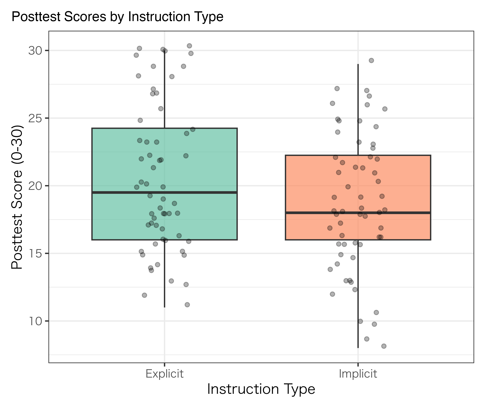
研究課題: TOEFL得点と語彙テスト得点の間に有意な相関があるか？
# Pearsonの相関係数
cor_result <- cor.test(ele_data$toefl_score, ele_data$vocabulary_test)
cor_result
Pearson's product-moment correlation
data: ele_data$toefl_score and ele_data$vocabulary_test
t = 20.421, df = 118, p-value < 2.2e-16
alternative hypothesis: true correlation is not equal to 0
95 percent confidence interval:
0.8359032 0.9169964
sample estimates:
cor
0.8828661 # テストスコア間の相関行列（散布図行列）
ele_data |>
select(toefl_score, vocabulary_test, reading_score, writing_score) |>
GGally::ggpairs(
title = "Correlation Matrix of Test Scores",
lower = list(continuous = wrap("smooth", alpha = 0.3, size = 0.8)),
diag = list(continuous = wrap("densityDiag", alpha = 0.5))
)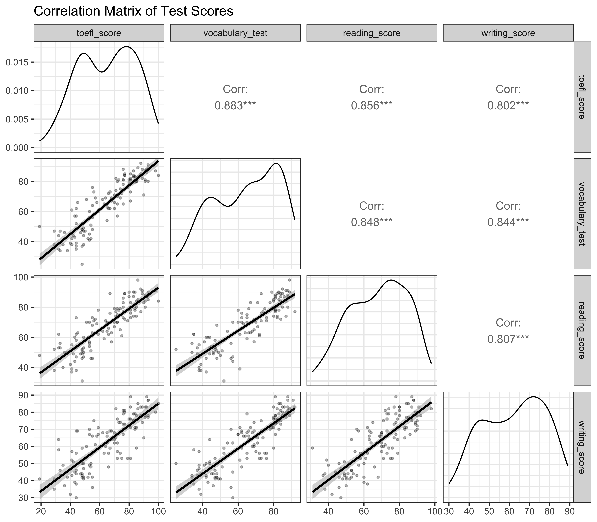
研究課題: TOEFL得点は、語彙テスト得点と読解テスト得点で予測できるか？
# 重回帰モデル
model <- lm(toefl_score ~ vocabulary_test + reading_score, data = ele_data)
summary(model)
Call:
lm(formula = toefl_score ~ vocabulary_test + reading_score, data = ele_data)
Residuals:
Min 1Q Median 3Q Max
-27.119 -5.239 1.004 5.267 16.378
Coefficients:
Estimate Std. Error t value Pr(>|t|)
(Intercept) -6.73162 3.33188 -2.020 0.0456 *
vocabulary_test 0.61002 0.08090 7.541 1.09e-11 ***
reading_score 0.46562 0.09007 5.169 9.80e-07 ***
---
Signif. codes: 0 '***' 0.001 '**' 0.01 '*' 0.05 '.' 0.1 ' ' 1
Residual standard error: 8.098 on 117 degrees of freedom
Multiple R-squared: 0.8205, Adjusted R-squared: 0.8174
F-statistic: 267.3 on 2 and 117 DF, p-value: < 2.2e-16# 回帰係数をgt()テーブルで表示
broom::tidy(model, conf.int = TRUE) |>
gt() |>
tab_header(
title = "重回帰分析の結果",
subtitle = "目的変数: TOEFL iBT Score"
) |>
fmt_number(columns = c(estimate, std.error, statistic,
p.value, conf.low, conf.high), decimals = 3) |>
cols_label(
term = "予測変数",
estimate = "B",
std.error = "SE",
statistic = "t",
p.value = "p",
conf.low = "95% CI Lower",
conf.high = "95% CI Upper"
)| 重回帰分析の結果 | ||||||
| 目的変数: TOEFL iBT Score | ||||||
| 予測変数 | B | SE | t | p | 95% CI Lower | 95% CI Upper |
|---|---|---|---|---|---|---|
| (Intercept) | −6.732 | 3.332 | −2.020 | 0.046 | −13.330 | −0.133 |
| vocabulary_test | 0.610 | 0.081 | 7.541 | 0.000 | 0.450 | 0.770 |
| reading_score | 0.466 | 0.090 | 5.169 | 0.000 | 0.287 | 0.644 |
統計的有意性（p値）だけでなく、効果の実質的な大きさを報告することが現代の研究では求められています。
# t検定の効果量（Cohen's d）
effectsize::cohens_d(posttest ~ instruction_type, data = ele_data)Cohen's d | 95% CI
-------------------------
0.35 | [-0.01, 0.71]
- Estimated using pooled SD.# 回帰モデルの決定係数（R²）
cat("R² =", summary(model)$r.squared |> round(3), "\n")R² = 0.82 cat("Adjusted R² =", summary(model)$adj.r.squared |> round(3))Adjusted R² = 0.817t検定: “t(df) = x.xx, p = .xxx, d = x.xx, 95% CI [x.xx, x.xx]”
回帰分析: “語彙テスト得点 (B = x.xx, SE = x.xx, t = x.xx, p < .001) と読解テスト得点 (B = x.xx, SE = x.xx, t = x.xx, p < .001) はTOEFL得点の有意な予測因子であった (R² = .xx)。”
統計検定を行う際は、各手法が前提とする仮定を確認する必要があります。
shapiro.test()）、等分散性（var.test()）plot(model)）詳細は各章で扱います。Welchのt検定は等分散を仮定しないため、t.test() のデフォルト（var.equal = FALSE）をそのまま使用することを推奨します。
flowchart TD
A["研究仮説の設定"] --> B{"データの種類"}
B -->|"2群比較"| C["t検定 → 第1章"]
B -->|"3群以上"| D["ANOVA → 第2章"]
B -->|"相関・予測"| E["回帰分析 → 第4章"]
B -->|"2値データ"| F["GLM → 第5章"]
B -->|"階層構造"| G["混合効果モデル → 第6章"]
style A fill:#e3f2fd,stroke:#1976d2
style B fill:#fff9c4,stroke:#fbc02d
style C fill:#f3e5f5,stroke:#7b1fa2
style D fill:#f3e5f5,stroke:#7b1fa2
style E fill:#f3e5f5,stroke:#7b1fa2
style F fill:#f3e5f5,stroke:#7b1fa2
style G fill:#f3e5f5,stroke:#7b1fa2flowchart TD
A["研究仮説の設定"] --> B{"データの種類"}
B -->|"2群比較"| C["t検定 → 第1章"]
B -->|"3群以上"| D["ANOVA → 第2章"]
B -->|"相関・予測"| E["回帰分析 → 第4章"]
B -->|"2値データ"| F["GLM → 第5章"]
B -->|"階層構造"| G["混合効果モデル → 第6章"]
style A fill:#e3f2fd,stroke:#1976d2
style B fill:#fff9c4,stroke:#fbc02d
style C fill:#f3e5f5,stroke:#7b1fa2
style D fill:#f3e5f5,stroke:#7b1fa2
style E fill:#f3e5f5,stroke:#7b1fa2
style F fill:#f3e5f5,stroke:#7b1fa2
style G fill:#f3e5f5,stroke:#7b1fa2
Statistical Method Selection Flowchart
本書ではすべての章で pacman::p_load() を使用しています。この関数は、パッケージが未インストールの場合は自動的にインストールし、その後読み込みを行います。
# pacmanのインストール（初回のみ）
install.packages("pacman")
# パッケージの読み込み（未インストールなら自動インストール）
pacman::p_load(tidyverse, gt, psych, effectsize)
# 従来の方法（比較用）
# install.packages("tidyverse") # 手動インストールが必要
# library(tidyverse) # インストール済みでないとエラーlibrary() は対象パッケージが未インストールの場合エラーになりますが、p_load() は自動的にインストールしてから読み込みます。本書のコードをそのまま実行する際に、パッケージの有無を気にする必要がなくなります。
# CRANから個別にインストール
install.packages("lme4")
# 複数パッケージを一度にインストール
install.packages(c("lme4", "lmerTest", "emmeans"))
# GitHub上の開発版パッケージ
# install.packages("remotes")
remotes::install_github("author/package")
# pacmanでGitHubパッケージを読み込む
pacman::p_load_gh("author/package")
# パッケージバージョンの確認
packageVersion("tidyverse")# 本書で使用する主なパッケージ一覧
tibble::tribble(
~カテゴリ, ~パッケージ, ~用途,
"データ操作", "tidyverse", "dplyr, tidyr, readr, ggplot2等の統合パッケージ",
"データ操作", "readxl", "Excelファイルの読み込み",
"表作成", "gt", "出版品質のテーブル作成",
"可視化", "ggplot2", "グラフ作成（tidyverseに含まれる）",
"可視化", "GGally", "散布図行列（ggpairs）",
"可視化", "patchwork", "複数の図を並べる",
"統計（基礎）", "psych", "記述統計（describe）",
"統計（基礎）", "car", "分散分析の検定",
"統計（基礎）", "effectsize", "効果量の算出",
"統計（基礎）", "emmeans", "推定周辺平均・事後比較",
"統計（基礎）", "pwr", "検定力分析",
"混合効果", "lme4", "線形・一般化線形混合モデル",
"混合効果", "lmerTest", "混合モデルのp値算出",
"ベイズ推定", "brms", "ベイズ回帰モデル",
"テスト理論", "mirt", "多次元項目応答理論",
"テスト理論", "eRm", "ラッシュモデル",
"テキスト分析", "quanteda", "コーパス分析・テキスト量的分析",
"テキスト分析", "tidytext", "tidy原則に基づくテキスト分析",
"メタ分析", "metafor", "メタ分析",
"レポート", "broom", "モデル結果の整形",
"レポート", "knitr", "文書作成支援"
) |>
gt() |>
tab_header(title = "本書で使用する主なRパッケージ") |>
cols_label(
カテゴリ = "カテゴリ",
パッケージ = "パッケージ",
用途 = "用途"
)| 本書で使用する主なRパッケージ | ||
| カテゴリ | パッケージ | 用途 |
|---|---|---|
| データ操作 | tidyverse | dplyr, tidyr, readr, ggplot2等の統合パッケージ |
| データ操作 | readxl | Excelファイルの読み込み |
| 表作成 | gt | 出版品質のテーブル作成 |
| 可視化 | ggplot2 | グラフ作成（tidyverseに含まれる） |
| 可視化 | GGally | 散布図行列（ggpairs） |
| 可視化 | patchwork | 複数の図を並べる |
| 統計（基礎） | psych | 記述統計（describe） |
| 統計（基礎） | car | 分散分析の検定 |
| 統計（基礎） | effectsize | 効果量の算出 |
| 統計（基礎） | emmeans | 推定周辺平均・事後比較 |
| 統計（基礎） | pwr | 検定力分析 |
| 混合効果 | lme4 | 線形・一般化線形混合モデル |
| 混合効果 | lmerTest | 混合モデルのp値算出 |
| ベイズ推定 | brms | ベイズ回帰モデル |
| テスト理論 | mirt | 多次元項目応答理論 |
| テスト理論 | eRm | ラッシュモデル |
| テキスト分析 | quanteda | コーパス分析・テキスト量的分析 |
| テキスト分析 | tidytext | tidy原則に基づくテキスト分析 |
| メタ分析 | metafor | メタ分析 |
| レポート | broom | モデル結果の整形 |
| レポート | knitr | 文書作成支援 |
複数のパッケージで同名の関数が定義されている場合、後から読み込んだパッケージの関数が優先されます（マスキング）。library() や pacman::p_load() でパッケージを読み込んだ際に、コンソールに表示される「The following objects are masked from ...」というメッセージがこれに該当します。
本書で特に注意が必要な競合を以下にまとめます。
tibble::tribble(
~dplyr関数, ~競合パッケージ, ~競合関数, ~発生しやすい場面,
"dplyr::select()", "MASS", "MASS::select()", "lme4, lmerTest 読み込み時（MASSに依存）",
"dplyr::filter()", "stats", "stats::filter()", "tidyverseより前にstatsが読み込まれている",
"dplyr::lag()", "stats", "stats::lag()", "時系列データの分析時",
"dplyr::rename()", "plyr", "plyr::rename()", "plyrとdplyrの併用時",
"dplyr::summarise()","plyr", "plyr::summarise()", "plyrとdplyrの併用時",
"dplyr::count()", "plyr", "plyr::count()", "plyrとdplyrの併用時"
) |>
gt() |>
tab_header(
title = "dplyr関数の主な競合一覧",
subtitle = "後から読み込まれたパッケージの関数がマスキングされる"
) |>
cols_label(
dplyr関数 = "dplyr 関数",
競合パッケージ = "競合パッケージ",
競合関数 = "競合する関数",
発生しやすい場面 = "発生しやすい場面"
) |>
tab_source_note("Note. 最も頻出するのは MASS::select() との競合です。")| dplyr関数の主な競合一覧 | |||
| 後から読み込まれたパッケージの関数がマスキングされる | |||
| dplyr 関数 | 競合パッケージ | 競合する関数 | 発生しやすい場面 |
|---|---|---|---|
| dplyr::select() | MASS | MASS::select() | lme4, lmerTest 読み込み時（MASSに依存） |
| dplyr::filter() | stats | stats::filter() | tidyverseより前にstatsが読み込まれている |
| dplyr::lag() | stats | stats::lag() | 時系列データの分析時 |
| dplyr::rename() | plyr | plyr::rename() | plyrとdplyrの併用時 |
| dplyr::summarise() | plyr | plyr::summarise() | plyrとdplyrの併用時 |
| dplyr::count() | plyr | plyr::count() | plyrとdplyrの併用時 |
| Note. 最も頻出するのは MASS::select() との競合です。 | |||
本書の第6章（混合効果モデル）などで lme4 や lmerTest を使用すると、これらが内部で MASS パッケージに依存しているため、MASS::select() が dplyr::select() を上書きしてしまうことがあります。この場合、以下のようなエラーが発生します。
# よくあるエラーメッセージ
# Error in select(., participant_id, toefl_score) :
# unused arguments (participant_id, toefl_score)
#
# Error in select(., where(is.numeric)) :
# unused argument (where(is.numeric))このエラーが出た場合は、以下のいずれかの方法で対処してください。
# 方法 1: 名前空間を明示する（最も確実・推奨）
ele_data |> dplyr::select(participant_id, toefl_score)
# 方法 2: conflicted パッケージで優先順位を宣言する
library(conflicted)
conflict_prefer("select", "dplyr")
conflict_prefer("filter", "dplyr")
# 方法 3: パッケージの読み込み順序を制御する
# MASS を先に、tidyverse を後に読み込む
library(MASS)
library(tidyverse) # dplyr::select が優先される
# 方法 4: MASS をデタッチする（非推奨だが緊急時に）
# detach("package:MASS", unload = TRUE)スクリプトの先頭に以下を書いておくと、関数の競合が発生した際にエラーで知らせてくれるため、意図しないマスキングによるバグを未然に防げます。
library(conflicted)
conflicts_prefer(
dplyr::select,
dplyr::filter,
dplyr::lag,
dplyr::rename
)conflicts_prefer() は複数の関数を一度に宣言できるため、分析スクリプトの冒頭（パッケージ読み込み直後）に記述しておくことを推奨します。
研究プロジェクトごとにRStudioプロジェクト（.Rproj ファイル）を作成することを強く推奨します。プロジェクトを使用すると、作業ディレクトリが自動的にプロジェクトフォルダに設定され、相対パスでファイルにアクセスできるようになります。
# 推奨するプロジェクト構造
# MyELEProject/
# ├── data/ # 生データ（CSV, Excel, SPSS等）
# │ ├── raw/ # 元データ（編集しない）
# │ └── processed/ # 加工済みデータ
# ├── R/ # Rスクリプト
# ├── output/ # 分析結果（表、数値等）
# ├── figures/ # 図表（PNG, PDF等）
# ├── docs/ # メモ・論文草稿
# └── MyELEProject.Rproj # プロジェクトファイルsetwd("C:/Users/...") のようにスクリプト内で作業ディレクトリを変更すると、他の環境（共同研究者のPC等）でコードが動作しなくなります。代わりに RStudioプロジェクト を使用し、相対パスを用いてください。
乱数の種を固定する: set.seed() を使用して、シミュレーションやリサンプリングの結果を再現可能にします。
相対パスを使用する: here::here() を使うと、プロジェクトルートからの相対パスを簡潔に記述できます。
library(here)
data <- read_csv(here("data", "raw", "ele_vocabulary_study.csv"))
ggsave(here("figures", "toefl_distribution.png"), width = 8, height = 6)renv パッケージを使用すると、プロジェクトで使用したパッケージのバージョンを固定できます。# renvの初期化（プロジェクトごとに1回）
renv::init()
# パッケージの変更を記録
renv::snapshot()
# 記録された状態を復元（共同研究者のPC等で）
renv::restore()セッション情報を記録する: 分析スクリプトの末尾に sessionInfo() を置き、使用したRのバージョンとパッケージを記録します。
Quartoで分析を文書化する: 本書自体がQuartoで作成されています。コード・解説文・出力結果を1つの文書にまとめることで、分析過程の透明性を確保できます。
Rでエラーに遭遇することは、初心者に限らず日常的なことです。ここでは、英語教育研究でRを使い始めた際によく遭遇するエラーとその対処法をまとめます。
Error: object 'x' not found最も頻出するエラーです。指定した名前のオブジェクト（変数）が存在しないことを意味します。
主な原因と対処法:
toefl_score を toelf_score と打ち間違えていないか確認Toefl_Score と toefl_score は異なるオブジェクトですError: could not find function "xxx"指定した関数が見つからないエラーです。
主な原因と対処法:
pacman::p_load(パッケージ名) で読み込みread_csv を read.csv（別の関数）と混同していないか確認パッケージ名::関数名() で直接呼び出す（例: dplyr::filter()）Error: unexpected 'x' in "..."構文エラー（文法的な誤り）です。
主な原因と対処法:
( と ) の数が合っているか確認。RStudioでは対応する括弧がハイライトされます"文字列" の " が対応しているか確認|> の後に次の関数が続いているか確認Error in file(file, "rt"): cannot open the connectionファイルが見つからないエラーです。
主な原因と対処法:
getwd() で現在の作業ディレクトリを確認.csv vs .CSV）を含め正確に指定Warning: NAs introduced by coercion型変換に失敗して NA（欠損値）が生じた警告です。
主な原因と対処法:
as.numeric("abc") は NA を返しますstr(data) でデータ型を確認し、意図しない文字列が混入していないかチェックError: non-numeric argument to binary operator数値演算に数値でないデータが渡されたエラーです。
主な原因と対処法:
class() で変数の型を確認as.numeric() で数値に変換（ただし、元のデータが本当に数値であるか確認してから）str() と class() で型を確認: エラーの多くはデータ型の不一致が原因head() と tail() でデータを目視確認: 期待通りのデータが入っているか確認reprex パッケージで再現可能な最小例を作成すると、問題の特定と他者への質問が容易になります# 関数のヘルプを表示
?t.test
help(lm)
# パッケージのチュートリアル（vignette）を表示
vignette("dplyr")
browseVignettes("ggplot2")
# 再現可能な例の作成
# install.packages("reprex")
reprex::reprex({
x <- c(1, 2, "three")
mean(x)
})エラーが複数行にわたる場合は、最後の行（最も具体的なメッセージ）から読むと原因を特定しやすくなります。Error in ... の後に続く文言が、何が問題かを示しています。エラーメッセージは敵ではなく、問題解決のための手がかりです。
ファイルパスに日本語（例: C:/ユーザー/文書/データ.csv）が含まれていると、特にWindows環境でエラーが生じることがあります。プロジェクトフォルダ名やファイル名には 英数字のみ を使用することを推奨します。
日本語のRコミュニティ:
まずは自分でコードを書いてみて、その後に解答例と比較してください。エラーが出た場合は第11節（トラブルシューティング）を参照してください。解答例はコードブロックを展開すると表示されます。
研究シナリオ: あなたは20名の学生のTOEFL iBT Readingセクション（0–30点）の得点データを受け取りました。
タスク:
# 1. ベクトルの作成
reading_scores <- c(22, 18, 25, 20, 15, 28, 19, 23, 16, 27,
21, 24, 17, 26, 20, 22, 19, 25, 23, 18)
# 2. 記述統計
cat("平均値:", mean(reading_scores), "\n")平均値: 21.4 cat("中央値:", median(reading_scores), "\n")中央値: 21.5 cat("標準偏差:", sd(reading_scores) |> round(2), "\n")標準偏差: 3.72 # 3. 20点以上の学生数
cat("20点以上:", sum(reading_scores >= 20), "名\n")20点以上: 13 名# 4. データフレームの作成と並べ替え
reading_data <- data.frame(
participant_id = paste0("P", sprintf("%02d", 1:20)),
reading_score = reading_scores
)
reading_data |>
arrange(desc(reading_score)) |>
gt() |>
tab_header(title = "TOEFL iBT Reading Scores（降順）")| TOEFL iBT Reading Scores（降順） | |
| participant_id | reading_score |
|---|---|
| P06 | 28 |
| P10 | 27 |
| P14 | 26 |
| P03 | 25 |
| P18 | 25 |
| P12 | 24 |
| P08 | 23 |
| P19 | 23 |
| P01 | 22 |
| P16 | 22 |
| P11 | 21 |
| P04 | 20 |
| P15 | 20 |
| P07 | 19 |
| P17 | 19 |
| P02 | 18 |
| P20 | 18 |
| P13 | 17 |
| P09 | 16 |
| P05 | 15 |
研究シナリオ: 語彙学習実験で、明示的指導群（n=15）と暗示的指導群（n=15）の事前・事後テスト得点を分析します。
タスク:
mutate() でgain score（事後 - 事前）を計算group_by() + summarize() で群別の平均・標準偏差を算出gt() テーブルで表示# データセットの作成（このコードをまず実行してください）
set.seed(2024)
vocab_exp <- data.frame(
id = paste0("S", sprintf("%02d", 1:30)),
group = factor(rep(c("Explicit", "Implicit"), each = 15)),
pretest = c(round(rnorm(15, 12, 3)), round(rnorm(15, 11, 3))),
posttest = c(round(rnorm(15, 20, 3)), round(rnorm(15, 16, 3)))
)# 2. Gain scoreの計算
vocab_exp <- vocab_exp |>
mutate(gain = posttest - pretest)
# 3-4. 群別の記述統計をgt()で表示
vocab_exp |>
group_by(group) |>
summarize(
n = n(),
mean_pre = mean(pretest),
sd_pre = sd(pretest),
mean_post = mean(posttest),
sd_post = sd(posttest),
mean_gain = mean(gain),
sd_gain = sd(gain),
.groups = "drop"
) |>
gt() |>
tab_header(title = "群別の記述統計") |>
fmt_number(columns = where(is.numeric) & !c(n), decimals = 2) |>
cols_label(
group = "群", n = "n",
mean_pre = "M (Pre)", sd_pre = "SD (Pre)",
mean_post = "M (Post)", sd_post = "SD (Post)",
mean_gain = "M (Gain)", sd_gain = "SD (Gain)"
)| 群別の記述統計 | |||||||
| 群 | n | M (Pre) | SD (Pre) | M (Post) | SD (Post) | M (Gain) | SD (Gain) |
|---|---|---|---|---|---|---|---|
| Explicit | 15 | 13.53 | 3.09 | 19.00 | 2.93 | 5.47 | 4.84 |
| Implicit | 15 | 10.00 | 4.05 | 16.33 | 3.22 | 6.33 | 5.31 |
# 5. 箱ひげ図
ggplot(vocab_exp, aes(x = group, y = gain, fill = group)) +
geom_boxplot(alpha = 0.7) +
geom_jitter(width = 0.15, alpha = 0.5, size = 2) +
labs(title = "Gain Scores by Instruction Type",
x = "Instruction Group", y = "Gain Score") +
theme(legend.position = "none") +
scale_fill_brewer(palette = "Set2")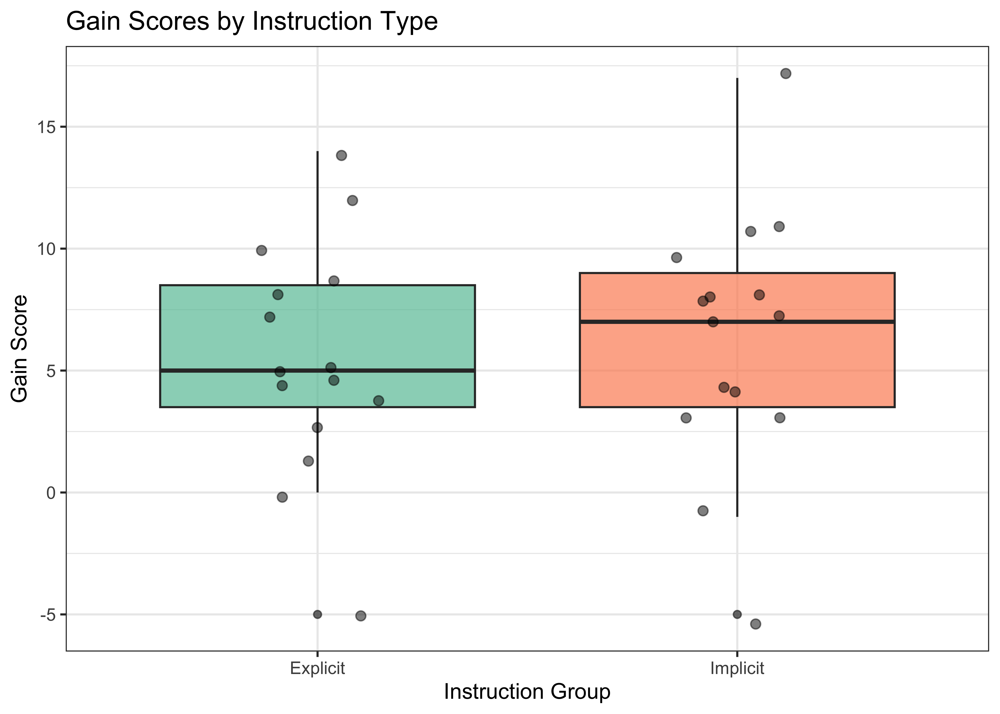
研究シナリオ: 問題2のデータを用いて、指導法の効果を統計的に検証します。
タスク:
# 1. 事前テストの群間比較（差がないことを確認）
t_pre <- t.test(pretest ~ group, data = vocab_exp)
cat("=== 事前テストの群間比較 ===\n")=== 事前テストの群間比較 ===print(t_pre)
Welch Two Sample t-test
data: pretest by group
t = 2.6847, df = 26.167, p-value = 0.01243
alternative hypothesis: true difference in means between group Explicit and group Implicit is not equal to 0
95 percent confidence interval:
0.828935 6.237732
sample estimates:
mean in group Explicit mean in group Implicit
13.53333 10.00000 # 2. Gain scoreのt検定
t_gain <- t.test(gain ~ group, data = vocab_exp)
cat("\n=== Gain Scoreの群間比較 ===\n")
=== Gain Scoreの群間比較 ===print(t_gain)
Welch Two Sample t-test
data: gain by group
t = -0.46706, df = 27.757, p-value = 0.6441
alternative hypothesis: true difference in means between group Explicit and group Implicit is not equal to 0
95 percent confidence interval:
-4.669146 2.935813
sample estimates:
mean in group Explicit mean in group Implicit
5.466667 6.333333 # 3. 効果量
d_gain <- effectsize::cohens_d(gain ~ group, data = vocab_exp)
cat("\n=== 効果量 ===\n")
=== 効果量 ===print(d_gain)Cohen's d | 95% CI
-------------------------
-0.17 | [-0.89, 0.55]
- Estimated using pooled SD.# 4. APA形式での報告例
cat("\n=== APA報告例 ===\n")
=== APA報告例 ===cat(sprintf(
"Gain scoreのt検定の結果、明示的指導群は暗示的指導群よりも\n有意に高いgain scoreを示した (t(%.1f) = %.2f, p = %.3f, d = %.2f)。",
t_gain$parameter, t_gain$statistic, t_gain$p.value,
abs(d_gain$Cohens_d)
))Gain scoreのt検定の結果、明示的指導群は暗示的指導群よりも
有意に高いgain scoreを示した (t(27.8) = -0.47, p = 0.644, d = 0.17)。sessionInfo()R version 4.5.2 (2025-10-31)
Platform: aarch64-apple-darwin20
Running under: macOS Tahoe 26.3
Matrix products: default
BLAS: /System/Library/Frameworks/Accelerate.framework/Versions/A/Frameworks/vecLib.framework/Versions/A/libBLAS.dylib
LAPACK: /Library/Frameworks/R.framework/Versions/4.5-arm64/Resources/lib/libRlapack.dylib; LAPACK version 3.12.1
locale:
[1] C.UTF-8/C.UTF-8/C.UTF-8/C/C.UTF-8/C.UTF-8
time zone: Asia/Tokyo
tzcode source: internal
attached base packages:
[1] stats graphics grDevices utils datasets methods base
other attached packages:
[1] broom_1.0.12 effectsize_1.0.1 psych_2.6.1 gt_1.3.0
[5] GGally_2.4.0 lubridate_1.9.5 forcats_1.0.1 stringr_1.6.0
[9] dplyr_1.2.0 purrr_1.2.1 readr_2.1.6 tidyr_1.3.2
[13] tibble_3.3.1 ggplot2_4.0.2 tidyverse_2.0.0
loaded via a namespace (and not attached):
[1] gtable_0.3.6 xfun_0.56 bayestestR_0.17.0 htmlwidgets_1.6.4
[5] insight_1.4.6 lattice_0.22-9 tzdb_0.5.0 vctrs_0.7.1
[9] tools_4.5.2 generics_0.1.4 parallel_4.5.2 datawizard_1.3.0
[13] sandwich_3.1-1 pacman_0.5.1 pkgconfig_2.0.3 Matrix_1.7-4
[17] RColorBrewer_1.1-3 S7_0.2.1 lifecycle_1.0.5 compiler_4.5.2
[21] farver_2.1.2 mnormt_2.1.2 codetools_0.2-20 sass_0.4.10
[25] htmltools_0.5.9 yaml_2.3.12 pillar_1.11.1 MASS_7.3-65
[29] multcomp_1.4-29 nlme_3.1-168 ggstats_0.12.0 tidyselect_1.2.1
[33] digest_0.6.39 mvtnorm_1.3-3 stringi_1.8.7 labeling_0.4.3
[37] splines_4.5.2 fastmap_1.2.0 grid_4.5.2 cli_3.6.5
[41] magrittr_2.0.4 utf8_1.2.6 survival_3.8-6 TH.data_1.1-5
[45] withr_3.0.2 backports_1.5.0 scales_1.4.0 timechange_0.4.0
[49] estimability_1.5.1 rmarkdown_2.30 emmeans_2.0.1 otel_0.2.0
[53] zoo_1.8-15 hms_1.1.4 coda_0.19-4.1 evaluate_1.0.5
[57] knitr_1.51 parameters_0.28.3 mgcv_1.9-4 rlang_1.1.7
[61] xtable_1.8-4 glue_1.8.0 xml2_1.5.2 jsonlite_2.0.0
[65] R6_2.6.1 fs_1.6.6